| 「あきらめない女」になろう (PHP文庫) | |
| 中山 み登り | |
| PHP研究所 (2001) | |
「あきらめない女」になろう
自分を磨いて幸せをつかむ30 章
中山 み登り
「あきらめない女だなぁ」
二十代の頃、私は女友達によく言われたものだ。
自分の中では、特別に「あきらめない女」という意識はなかったのだが、ハタと振り返ればうなずける。当時の私は、確かにあきらめていない。仕事も恋愛も「これだ！」とヒラメけば、イノシシのごとく突進していたように思う。
例を挙げれば......。二十代中盤の頃、私は趣味で小説を書いていた。繰り返すが、あくまでも趣味。しつこいが、趣味だったら趣味、である。
それなのに私は、書き上がった原稿を見て「これを、本にするゾ！」と思いついてしまったのだ。「するゾ！」と息巻いても冷静に考えたら、ド素人が気紛れに書いた原稿である。簡単に世に出るはずはない。
ところが恐いもの知らずだった私は、書き上がった原稿の束を横に置き、電話帳を広げた。そして大手の出版社にバンバン電話を入れて「あの～、わたくし小説を書いているものですが、一度読んでいただけませんか？」と、売り込みをはじめたのだ。
見ず知らずのド素人が、それも唐突に電話をかけてきて「読め」といっても、編集者が「ハイハイ」と二つ返事で受け取るはずもない。ほとんどの場合、「ウチでは無理です」「新人賞のコンテストに応募してください」と、電話はけんもほろろに切られてしまった。普通なら、ここで自分の無謀さに気づき、あきらめるだろう。が、私はあきらめなかった。毎日、毎日、それこそ電話帳が赤鉛筆で真っ赤になるまで売り込みを続けたのだ。
やがて、信じられない奇跡が起きた。ある出版社の女性編集者が興味を持ってくれたのだ。もちろん、そのままでは出版できないので大幅な書き直しを命ぜられたが、原稿は一年後に単行本となり書店に並んだ。
このエピソードを筆頭に、私は「これだ！」と思ったことには、欲張りに手を伸ばしていた。むろん、すべてのアプローチが成功したわけではない。想いを寄せる男性に告白してフラれたり、仕事でコケたり、失敗するほうが圧倒的に多かったと思う。それでも、二十代の頃は、つまずいても、ズッコケても、すっくと起き上がり、姿勢を正して新たな夢に手を伸ばしていた。その姿が、友達には「あきらめない女」に映ったのだろう。
それが、いつからか欲しいものに手を伸ばす勢いが弱まった。夢に向かう気力が、水を入れすぎたカルピスみたいに薄まってしまったのだ。
二十代をフリーアナウンサーとして過ごした私は、三十歳直前で劇的な貧困状態に陥った。若手に仕事を持っていかれたためだ。自分の〝 賞味期限切れ〟 を痛感しているこの時期、追い討ちをかけるように女友達はバンバン結婚していった。まるで「傷に塩」である。取り残された焦りはピークに達した。この頃、思った。「次」なる何かをつかむのは、もう限界。それよりも結婚したほうが賢明だ、と。
すっかり「あきらめのいい女」になっていた私は、本文に詳しく書いたが、結婚で「あがり」をつけようと、数多くの見合いをこなした。
が、あきらめの選択をしても、募るのはもどかしさばかり。とても、見合いで「あがり」などつけられなかった。
そして迎えた三十代、たどりついた結論は......。友達の結婚や出産は、確かに気になるけれど、人生は「給食」ではないのだから、横並びで同じものを食べなくてもいい。私は私のメニューでいこう、という着地点だった。
シングル女性に取材をしていると、彼女たちの多くも当時の私のように、自分の年齢に「もう......」をつけていた。「もう二十九歳」「もう三十二歳」と、勝手に〝 天井〟 を作っては、引き換えに夢や目標を棚上げしていた。
が、どうだろう。何年かたって、当時の自分の年齢を振り返ったとき、私たちはどんな感想を持つだろうか。
二十九歳の頃、私は「もう限界の年齢だ～」と痛切に感じていた。でも、三十七歳の今、その年齢を見下ろせば......。限界どころか、何でもできた歳だと思えるのだ。そう考えると、今の私だって同じこと。「三十七歳......、すごい歳になったな～」と思っていても、何年かたって今の年齢を振り返れば、「まだまだやれた！」と思うに違いない。
ならば、今の年齢を後ろ向きに受けとめて、何かをあきらめる必要などない。目標や夢をつかむための「握力」を、弛めることもないと思うのだ。
とはいっても、シングルで生きていると「このままでいいのかな......」と、ふと「赤信号」で立ち止まることもある。
この本は、そんなときに「赤信号」を「青信号」へと切り替える役割を手伝えれば、と思って書いた30章 です。
あなたの「元気の素」になれたら幸いです。
二〇〇一年二月
中山み登り
夢中さがし
――退屈な毎日を送っていませんか？
この頃取材をして感じるのが、生活に物足りなさを募らせている女性の多さだ。
ある女性は、その日常を「シナモンの利いていないアップルパイみたいなもん」と 譬 えていたが、きっと取り立てて不幸がないかわりに、スパイスの利いたトキメキもない、という意味なのだろう。
慶子さんも、そんな日常を語った一人だった。彼女を取材したのは、もう二年ほど前になるだろうか。当時、出版する本の関係で私は会社を辞めた女性たちに取材を進めていたのだが、慶子さんもまさに退職経験者。七年勤めた大手食品メーカーを辞めて、一年間ロスに留学。帰国したばかりだったのだ。
彼女が語学留学を決めたのは二十八歳の終わり頃だ。スキルアップが表向きの理由だったが、話を聞けば本音は微妙に違っていた。
当時、社内では同期の仲間がほとんど結婚退職していた。後輩は育ち、慶子さんは会社に居場所を失いつつあった。もはや会社に未練などない。しかし、かといって他にやりたい仕事も、結婚のあてもない。そこで彼女が思いついたのが、留学退職の道だったのだ。
これなら結婚退職に負けないくらいメジャーな見送りが受けられる。何より、海外に行けば英語が話せるようになるし、新しい出会いも期待できそう。うまくすれば、日本に戻って結婚と仕事をダブルで確保できるかも、と。
しかし期待を胸に渡米したものの、彼女が入学したのは、日本人ばかりの語学学校。結局、現地でも日本人同士でツルみ、結果を残せないまま予定の一年が経過。彼女は手ぶらで帰国することになってしまったわけだ。
「ロスでの収穫は、ピアスの穴だけだったな......」
当時の取材で、彼女は耳たぶに並んだ三つの穴を見せながら、苦笑いしていたものだ。
その彼女に再会したのは先月のことだった。
後追い取材というほど大げさではないが、どうしているかな、と連絡をしてみたのだ。
すると彼女の近況は、思いもよらぬ方向に進んでいた。
帰国後、すんなり再就職できなかった彼女は、花屋でアルバイトをはじめた。あくまでも再就職までのつなぎと考えてのことだ。ところが花の美しさやアレンジする面白さにすっかり取りつかれてしまった彼女は、その後一年半の間にフラワー・デザイナーの資格と、仕入れのネットワークを確保。自分で花屋を開いていたのだ。
彼女の店は、自宅の最寄り駅の商店街にあった。八百屋と薬屋の間にある私道を利用しての一坪ちょっとの商いは、どちらかといえば露店に近い雰囲気だ。
「こんな野ざらしの店で、恥ずかしいなあ」
小さな花束を手際よく作りながら、彼女は横顔のままで笑った。
すっぴんのせいか、二年前に取材したときよりも 頬 は幾分こけていた。花を束ねる指先には、自慢の長い 爪 もネイルアートもなかった。
けれど、小さな店内を所狭しと動き回る彼女は、 華 奢 な外見を裏切るほど、全身から力をみなぎらせていた。ピアスの穴をいじりながらうつむいていた、あの頃とは別人のように。
何が彼女を変えたのか。
忙しい彼女は多くを語らなかったが、ぽつりと口にした一言が耳に残った。
「もう同じ後悔を、したくなかったんだ」
留学から帰ってきた当時、彼女は「行かなきゃよかった」と繰り返していたものだ。
あのとき、彼女は会社に居づらいからと、留学の道を選んだ。言い換えれば、現状から逃げるために、お手頃な扉を開けたわけだ。
しかし、今回はどうだったろう。花屋の開店にあたっては、親はもとより、すでにママになっている親友も、大反対だったという。
彼女は三十二歳。そう、誰もが「無難にＯＬしながら結婚相手を探せ」と、提案したのだ。
けれど彼女は突っぱねた。その提案に乗れば、再び「逃げ」の扉を押すことになるからだ。もちろん自分の選択に不安がなかったと言えば 嘘 になるだろう。小さいながらも店をオープンするためには、資金もいるし、経営のノウハウも必要だ。好きだけでは続かない。
しかし彼女は自分の意志を貫いた。もう二度と後悔したくないと、自ら選んだ扉を開けているのだ。
寒空の下、店に立つ彼女の唇はカサカサに乾いていた。それでもリップクリームすら塗らず、彼女は忙しく働き続けていた。
飾り気など何もない。荒れた手も唇も、痛々しいほどだ。けれど、花束を作る横顔、花のアドバイスをする笑顔、レジを打つ背中、どれもが不思議なほどに輝いて見えた。
それは、彼女の動作のすべてに「夢中」の二文字がつくからだと思えてならなかった。
「いい歳して、クラブなんか行けないよ」
慶子さんの店から帰る途中、私は友人とかわした会話を思い出していた。踊りに行こうと誘われ、私はあっさり断っていたのだ。そういえばゴスペルソングの体験レッスンの誘いも、適当な理由をつけて行かなかった。興味はあるのに、歳を考えると恥ずかしい。だから「今さら」とか「向いてないよ」と自分に言い訳をして、お茶を濁していたのだ。
年齢を重ねるにつれ、私たちは自分で勝手に「立入禁止区域」を作っていないだろうか。
開けたい扉があるのに、 躊 躇 してしまう。そのくせ、甘いだけのアップルパイを惰性で頬張りながら、シナモンの利いたアップルパイが食べたいとボヤいてはいないだろうか。
もし、慶子さんのように、自分に素直な気持ちで新しい扉を開けられたら......。間違っても後悔はしないし、いつかきっと夢中になれる何かに巡り合えると思うのだ。恋愛でも、仕事でも、趣味でも、輝ける何かに。
次の週末は最新のクラブ、とやらで踊ってみようか。それともゴスペルを腹の底から歌ってこようか。
慶子さんが作ってくれたトルコキキョウの花束を抱え、私は久々に新しい扉を開けてみたいと強く思った。
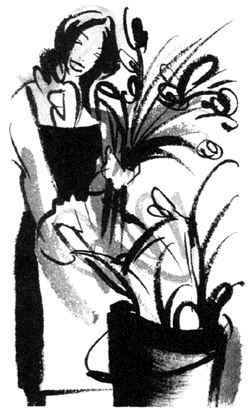
大人の夢
――夢を途中で手放していませんか？
「私、サセ子になってるの」
今でもはっきりおぼえている。
私が二十九歳のときのこと。同い年の友人、恵子（仮名）が深夜に受話器の向こうでつぶやいたのだ。
なぜ年齢まで鮮明に記憶しているかといえば、二十九歳当時の私たちは三十代を目前にターニングポイントを迎えていた。こういうとドラマチックだが、正直なところ私は年齢的にフリーアナウンサーとして仕事が減って、ほとんどプータローの日々を送り、商社に勤めていた恵子は、お 局 様へとありがたくない昇格を実感していたのだった。互いに仕事に行き詰まり、結婚に焦りと、まさに 蟻 地 獄 にもがいた年齢......。それが二十九歳だったのだ。
ピンチ脱出に、電撃結婚を 狙 った私は、結婚までの最短距離、見合いに燃えた。一方、顔の広い恵子は合コンに勝負を 賭 けていた。そんな折りだ、恵子から例の電話があったのは。
恵子の名誉のために書いておきたいが、彼女は 尻 軽 女ではない。これまで愛のないセックスは決してしなかった女である。なのに、なぜサセ子に......。私は彼女が結婚を焦るあまり、「方針」を変えたのかと首を 傾 げた。
ところが話を聞くと様子が違うのだ。
恵子は合コンやパーティーで知り合った男性と簡単に関係を持っては、その相手をバッサバッサと切り捨てていった。既成事実を 楯 に男性を 繋 ぎとめるどころか、芽生えかけた信頼関係を壊すかのように、あっけからんと裸になっていたのだ。これでは彼氏ができるどころか、自分が傷つくだけである。私は友人としてそのことを責めた。
すると彼女は小さく声でうなずいた後、ため息まじりにこうつぶやいた。
「あと五つ若かったらなあ」と。
恵子には昔から温めていた夢があったのだ。料理好きの彼女は、調理から盛り付けまでをアレンジするフード・コーディネーターになりたいと希望を語っていた。レシピを集め、料理学校にも通っていた彼女は、かなり本気でその道を目指していたのかもしれない。
しかし彼女は行動を起こさなかった。
日々の安定したＯＬ生活を捨て切れなかったのだ。
ところが、三十歳を目前に彼女を取り巻く環境は変わりはじめた。同期の仲間は次々と結婚退職。後輩はめきめき育ち、上司は飲み会のたびに結婚の予定を聞くようになってきた。この頃から彼女は会社を辞める潮時を感じるようになった。
と、同時に、しまっておいた夢がムクムクと顔を出してきたわけだ。
けれど、もう二十九歳。 三 十 路 に王手がかかった年齢で今さら夢など追えない。
彼女は自分を戒めて、夢を再び引き出しの奥にしまい込んだ。そして、結婚へと気持ちを無理矢理ねじ曲げた。
が、いかんせん本音に背中を向けての選択である。夢と現実の 狭 間 で心には摩擦が起こる。それが彼女の場合、破滅型の行動に現れてしまったようなのだ。
恵子は結局、その状態のまま一年近く過ごしていた。つまり一年間、迷いの渦中にいたと言い換えられるのかもしれない。
そんな恵子が今、何をしているかといえば......。彼女は三十歳を機に突然会社を辞めている。そして周囲の驚きをよそに退職した足で、大御所のフード・コーディネーターに弟子入り。一気に夢の扉をたたいているのだ。
「ババアに肉体労働はキツイわ」
当初、恵子はボスに怒鳴られ、十歳も下の先輩にはアゴで 扱 き 使 われていると、「三十歳の新人」の悲惨な日々を嘆いていた。 火傷 や切り傷の跡が、その言葉を生々しく物語っていたものだ。しかし、シビアな内容とは裏腹に、彼女の口調はとても弾んでいた。少なくとも「私、サセ子になってるの......」とつぶやいた、あの夜の沈んだ声とは比較にならないほど。
あれから五年たった今、恵子はフード・コーディネーターとして独立。主婦向けの雑誌を中心に忙しく活躍している。
そして同じ時期に迷った私のことも少々付け加えれば......。没個性の男性と散散見合いをした私は、無理して二人になるより、一人でいいと、やがて見合いを下りた。「夫」は見つけられなかったが、それらの見合いは決して無駄ではなかったと思う。年齢を気にせず生涯続けられる職業を、とライターとして出発することを決心できたからだ。
私も恵子も一般的に見たら遅いスタートだったろう。どうせなら二十代前半で行動を起こせば、もっと早く一人前になれたのかもしれない。けれど、言い訳に聞こえるかもしれないが、ゲップが出るほど見合いしたり、破滅型の女になって自分を痛めつけたり、途方もなく遠回りしたからこそ、やっと自分に必要なものが見えてきた。自分らしい人生の設計図が引けたように思えるのだ。
ライターという仕事柄、多くの女性と接するが、二十代後半から三十代で新たな夢に挑んでいる女性は少なくない。
資格を取ってキャリアアップした女性。三十代で留学を決めた女性。ＯＬからエステティシャンに転職したり、福祉の仕事がしたいと大学に入り直した女性等々。ちょっと思い出しただけでも、いくつもの顔が浮かぶ。
彼女たちの夢はそれぞれだけれど、もし共通点があるとすれば、それは年齢に関係なく、夢をつかもうとする〝 握力〟 が人一倍強いということだ。
遅いスタートは確かに夢の実現を遅らせる。だが、迷い、悩んだプロセスを経たからこそ、自分にとって必要な夢を絞り込める。
惜しげもなく夢を途中で手放す「青い世代」とは対照的に、彼女たちが夢に強く執着できるのは、そんな理由からではないだろうか。
歌手、スチュワーデス、保母......子供時代の夢を実現した人は、どのくらいいるだろう。少なくとも私の周りでは、ほとんど見かけない。
そう、夢には年齢制限がない。いや、それどころか「若い世代の夢」より「大人の夢」のほうがずっと手堅く実現できると思うのだ。
ジェラシー
――嫉妬を感じたら、自分磨きのチャンス！
「もう、砂を 噛 む日々ですよー」
ある夜、年下の女友達、智子さん（仮名・二十六歳）が、泣きの電話をかけてきた。
聞けば、彼女に砂を噛ませているのは六つ歳上のお 局 様......。同じ部署なのに、関係がぎくしゃくして、職場の居心地が最悪だというのだ。
それにしても、私は首を 傾 げてしまった。
智子さんは底抜けに明るい。それだけではなく、常識もわきまえていて責任感も強い。そんな彼女は誰からも好かれるキャラクターで、お局といえども、目の 敵 にするとは思えなかったからだ。
ところが、話を聞いて納得できた。
建設機器メーカーに勤める彼女は、営業部で役員付の秘書をしているのだが、お局も同じ秘書業務。しかも、お局は、明るくて、仕事が敏速で、責任感も強い人......。
つまり、智子さんとそっくりのタイプ。二人は「キャラ」がかぶっていたわけだ。
二人しかいない秘書が、同じ味を出していたら、上司はもとより男性社員も古株のお局より、若い智子さんをかわいがるだろう。
すっかり 霞 んでしまったお局は、面白くない。そこで、智子さんイジメに走ったわけだ。
電話を取り次いでもらえなかったり、帰る間際に山のような残業を押しつけられたり、お局の攻撃はチクチクと 執 拗 に続いた。それでも智子さんは、自分は後輩だから、と言い聞かせ、ひたすら耐えた。
ところが、ある日、智子さんの怒りは沸点に達してしまったという。
その日、上司から呼び出された智子さんに差し出されたのは一通の便せん。そこには名指しで、彼女が社内不倫をしていると根も葉もない 嘘 が書かれ、「社内の風紀を乱す人には辞めてもらうべきです」と 締 め 括 られていたそうだ。笑ってしまうほど安っぽい内容と、差し出し人が匿名だったことで、上司は手紙を一笑に付した。が、「人から恨みを買わないよう、人間関係を円満にするように」と、彼女は 釘 を刺されてしまった。
犯人は言わずと知れたお局だ。さすがの智子さんも、このときばかりはキレた。お局に反旗を 翻 したのだ。ところが......。
お局のデスクで洗いざらい怒りをぶちまけた智子さんは、肩で息をしながら反撃を待った。しかし、お局は言い返すどころか、大粒の涙をぽろぽろこぼし否定するばかり。智子さんはズッコケた格好になってしまったのだ。
その上、周囲には社員が何人も残っていたが、泣く先輩と、泣かせた後輩、彼らの目には、被害者と加害者が逆転して映ってしまったのだろう。この日を境に、彼女には「恐い女」とレッテルが 貼 られ、お局には「耐える女」の称号が与えられた。以来、すっかり居場所を失った智子さんを 尻 目 に、お局は生き生きと仕事をしているという。
私は智子さんの話を聞いて、彼女に同情した。とんでもない女がいるもんだと激怒した。だが、反面ちらりと思ってしまった。
お局が智子さんをいじめた理由は、 嫉 妬 以外の何ものでもない。嫉妬を陰湿なイジメで解消したやり口は許せない。が、お局ほど極端でなくとも、私たちは誰しも、幸福を手にした人間に、そっと嫉妬の視線を送ってはいないだろうかと。
以前、イチロー選手と自分と同世代の福島弓子さんが電撃結婚したとき私は「どういうこと！」と、無性に腹が立った。友達の結婚披露宴に呼ばれれば「おめでとう！」と笑いつつも、新郎の 粗 を探している自分がいる。これってジェラシー以外の何ものでもないと思うのだ。
人の幸せに反応して、まとわりついてくるジェラシー。時に自分が嫌になるほど底意地の悪いこの感情とは、どう折り合いをつけていけばいいのだろうか。
フリーアナウンサーの女友達がいる。
彼女（三十二歳）はラジオを中心に活躍しているが、数年前に長年続けてきた番組を降りることになった。フリーの身だ。レギュラーが減るのは死活問題である。普通に考えれば、後任の新人アナウンサーに嫌味の一つでもお見舞いしたくなるだろう。
なのに、彼女が去りぎわにとった行動は......。
彼女は、ゲストとの接し方や時間配分のコツなどを丁寧にまとめ、後任のために申し送りノートを作っているのだ。まるで母親が、嫁に行く娘に料理のレシピを授けるように。
なぜ、彼女は嫉妬の場面で、逆の行動に出たのだろう。
その答えは、半年後にかわした彼女の言葉の中に隠されていた。
「番組降板はショックだったよ。でも、逆風が吹いたからこそ、私は燃えたと思うの」
番組を降板後、時間に余裕ができた彼女は、自分の引き出しに新しい分野を取り込もうと、 歌 舞 伎 や英会話教室に通いはじめたそうだ。と、同時に番組のオーディションも、数え切れないほど受けたという。
半年後、彼女の声は再びラジオから流れていた。念願のＦＭ局で、初のレギュラー番組を射止めていたのだ。
幸せそうな後任に、怪文書ではなくエールを送った彼女。彼女は相手を 妬 むエネルギーを自分磨きにあてた。何度落ちてもオーディションに足を運ぶパワーにあてた。
そう、彼女は、嫉妬を〝 バネ〟 に使っているのだ。
恋愛、仕事、お金......。自分より恵まれた人を見れば、嫉妬は影のようにつきまとう。
それは、悲しいと泣くこととか、うれしいと笑うことと同じで、自然の感情なのかもしれない。
けれど、ウジウジ嫉妬するか、それとも嫉妬をバネに転換するか......。ジェラシーは扱い方次第で、結果が大きく違ってくるのではないだろうか。
もし身近に、「幸せ指数」の高い人がいたら、妬むより、むしろ自分が前に進むチャンスだと考えてみたいものだ。
ジェラシーは百人の「頑張れ」より、時として威力のあるカンフル剤になるのだから。
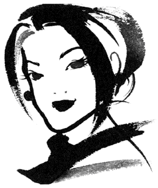
自信
――輝きを失わない生き方って？
「キョンキョンも来るわよ」
ある晩のこと、女友達から電話をもらった。
彼女は学生時代の友人だが、現在は結婚して子育て真っ最中である。
そして名前があがったキョンキョンとは、女友達のＯＬ時代の後輩のこと。かつて女友達を通じ、後輩たちとは何度か飲んだことがあったのだが、久々に昔のメンバーが集まるので私にも顔を出さないか、と誘ってくれたのだ。
実に五年ぶりの再会となるキョンキョンは、当時二十五歳。ニックネームが物語る通り、小泉今日子に似て目がクリッとした、あごの 尖 ったアイドル系の美女で、社内でもマドンナ的存在だった。彼女が参加する飲み会には、男性の出席率が倍増するほど、その人気は高かった。
また、彼女は男性だけでなく同性にもかわいがられる存在だった。
はじめて会ったときのこと。彼女は「その口紅、どこのですか？」と人懐っこい笑顔を向けてきた。私がメーカーと品番を教えると、彼女はわざわざ手帳にメモり「おそろいで買ってもいいですか？」と小首を 傾 げた。まるで妹のように振舞う彼女に、私があっと言う間に警戒心を解いてしまったのは言うまでもない。
このあたりの立ち居振舞いからもわかるように、彼女は誰からも愛されるアイドルの資質をしっかり持ち合わせている女性だったのだ。
周囲の視線を一身に集める彼女は当時、他の女性がかすんでしまうほど輝いていた。その輝きは女としての「自信」と置き換えられたかもしれない。
さて、久しぶりに再会したキョンキョンは、期待を裏切らない美しさを保っていた。
和食屋の御座敷にそそと座る彼女は、グッチのバッグを 脇 に置き、ソニアリキエルのニットを上品に着こなす。明るくカラーリングされたセミロングヘアからは、ダイヤのピアスがさりげなくのぞいていた。あの頃から五年。三十歳を迎えた彼女は、ますます洗練されていた。
しかし、カキ 鍋 をつつき、 雑 炊 づくりに取りかかる頃になって、彼女のイメージが私の中で変わってきたのだ。
久々のキョンキョンは、確かに美しかった。人懐っこいキャラクターも、あの頃のままだった。相変わらず愛され上手で、「そのプラダのバッグ、素敵ぃ」「ぜんぜん変わらなくて若いですねぇ」などと、私や女友達のお姉様陣を喜ばすツボも心得ていた。
小首を傾げる仕草や、すねて口を尖らすポーズもあの頃のままだ。
でも、 誉 めてもらっておいて申し訳ないのだが、当時のままアイドル路線を前面に押し出す彼女に、私は違和感を覚えた。二十五歳のあの頃なら自然に受けとめられた彼女の言動が、三十歳になった今だと、なんだか痛々しく思えてならなかったからだ。
ＯＬを続けている彼女は入社以来、仕事内容も環境も変えず今に至っているという。彼女の言葉を借りれば「どうせ、いつか結婚するし」ということらしい。
「誰かいい人、いませんか？」
キョンキョンは、再び小首を傾げてかわいくポーズを作る。三十歳、アイドルの立場を死守しながら、結婚退職という唯一の花道を待つ彼女......。
残念ながら、そんな彼女からは、あの頃の輝く自信は消えていた。ひょっとして、そのことに一番気づいているのは彼女自身かもしれない。だからこそ彼女は若さという武器を失いつつある今、ブランド品といった小道具を使って輝く自分を演出していた。自信の 帳 尻 を合わせていたのではないだろうか。
本物の自信とは、なんだろう？
その問いの答えは、くしくもカキ鍋をつつく同じテーブルにあった。
由美さん（仮名）はキョンキョンと同期である。 細 面 で色白の彼女は典型的な日本美人だ。しかし、あの頃はキョンキョンの陰に隠れ、目立たない存在だった。飲み会の席、男性からキョンキョンへの熱い視線を、彼女は背中で受ける立場だったように記憶している。
その由美さんは、この五年間に大きく世界を変えていた。四年前に会社を退職して、看護学校に入学。昨年の春、国家試験に受かり、ナースの仲間入りを果たしているのだ。
「ずいぶん老けた新人ですけど」
彼女は茶化して転職の苦労を多くは語らなかった。が、社会に出てからの方向転換。それも学生に戻るという選択には、大きな不安が伴ったのではないだろうか。
地方出身の彼女は、退職によって会社借り上げのマンションを出ることになった。引っ越し先は築三十年の古びたアパート。彼女はここで看護学校時代の三年間を過ごしている。
一度社会に出て、会社組織に守られてきた彼女にとって、組織から離れ、定収入を捨てる心細さは並大抵ではなかったと思うのだ。
彼女は苦労話のかわりに、グレープフルーツで注射の練習をしたことや、研修中の失敗談を笑顔で教えてくれた。
生き生きと語る、その横顔には紛れもなく「自信」という輝きが満ちていた。
彼女は看護婦のライセンスを得たことで自信をつけたのだろうか。少し違うように思う。資格はあくまでも結果。自信の源は、そのプロセスにあるように思うのだ。
人生の転機に自分で道を選択し、行動を起こした彼女。その裏には先にどんな結果が待っていても後悔しない、言い換えれば自分の人生に最後まで自分で責任をもつ覚悟が感じられた。
そう、彼女の自信は、若さやブランド品という付加価値に裏打ちされたものではなく、生きる姿勢自体から生まれたものだと思う。
後輩たちと別れ、女友達と二人で帰る道すがら、私たちはどちらともなくつぶやいた。「由美ちゃん、きれいになってたね」と。
本物の自信とは、自分の人生を自分の足で歩いている人だけが身に付けられる、とっておきの〝 宝石〟 ではないだろうか。
欲望
――自分に必要なものがわかっていますか？
先日のこと。思いがけない場所で、高校時代の同窓生と再会した。
その場所とは、産婦人科の待合室。子宮ガンの定期検査を終えた私に、大きなお 腹 をした彼女が声をかけてきたのだ。
片や独身でガン検査、片や妊娠の検診か......。立場によって産婦人科の利用目的も違うもんだと苦笑しつつ、久々に再会を果たした私たちは、その後、喫茶店に流れた。
そして約十年の空白を埋めるべく、近況報告に燃えたのだが、当時のまま実家に暮らし続ける私の変化のなさに比べ、彼女が語る〝 履歴書〟 が、実に盛りだくさんだったのだ。
短大卒業後、製薬会社で三年間働いた彼女は、「英語をマスターしたい」と退職。ワーキングホリデーを利用してカナダに飛んだ。その後、「日本で勝負したい」と二十六歳で帰国して、今度は食品メーカーに総合職採用された。ここで、花形の営業部に配属されたのだが、「女には見えない天井がある」と三年で退職。やがてバブルの崩壊を迎え、「本物の知識がないと生き残れない」と次なるステージに大学を選び、経済を学びはじめた。しかし、意外にも卒業間近の三十三歳の誕生日、彼女が決めたことは、卒論のテーマではなく、結婚。当時、つきあっていた彼氏とあっさり入籍して、現在、妊娠八カ月というわけだ。
転職、留学、大学、結婚、妊娠と、彼女がたどった歩みは、まるで自由に生きる女の王道。やりたいことに迷わず手を伸ばす 貪 欲 さには、素直に感心してしまうほどである。
しかし、私は彼女の「濃厚な歴史」にうなずきながらも、心の中で首を 傾 げてしまった。
なぜならば、彼女が話の合間に「先が見えて」というフレーズを何度も口にしたからだ。
たとえば、こうだ。製薬会社に入ったけど、三年で「先が見えて」辞めた。海外は楽しかったけど「お気楽な生活に先が見えて」帰国した。総合職から大学入試も、大学から結婚もしかり。つまり、今の環境から、次の環境へ移る〝 接続詞〟 として「先が見えて」という理由が繰り返し使われているのだ。
「二人きりの生活に先が見えたから、子供を作ったのよ」
子作りを決めた理由までも、同じだった。
もちろん、結婚や妊娠にまつわる話は、独身の私への配慮もあって、あえて冷めた言い回しを選んでくれたのかもしれない。が、それを割り引いても少々気になった。
子供が生まれ、もし子育てに先が見えたら、彼女は次に何を欲しがるのだろうかと。子供のお受験か、それとも仕事への復帰だろうか......それにも先が見えたら......。彼女は〝 連鎖〟 のように、次なる欲望の的を探すのだろうか。
もちろん、彼女の貪欲な生き方を否定するつもりはない。欲を持つことは生きる原動力になるし、何より幸せをつかむために欲望は欠かせない感情だとも思うから。が、一方で考えてしまうのだ。 闇 雲 に欲望を持つことが、そのまま幸せに結びつくのだろうかと。
ライターの女友達（仮にＡ子）がいる。彼女は仲間内で「無欲の女」と呼ばれていた。
もともとインテリア関係の会社でＰＲ部に所属していたＡ子は、好きなインテリアを書く立場から伝えたいと、会社を辞めてフリーライターになった。といっても、最初からとんとん拍子に仕事が入るほど、この世界は甘くない。船出したものの、Ａ子は定収入を失い、すぐにピンチに陥った。「一山、百円のナスで一週間食いつないだ」などというエピソードからも、彼女の緊迫した生活ぶりが 窺 えた。そんな彼女を見兼ね、周囲のライター仲間は、「いろんな分野で仕事をこなせ」と、グルメ記事やダイエット特集の仕事を彼女に紹介した。しかしＡ子は、それらの誘いをかたくなに断った。マルチに活躍するライター仲間が、広いマンションに移ったり、海外旅行に行ったり、中古だが外車を買ったりしても、Ａ子は他の仕事に色気を見せなかった。
それこそ、ナスの 油 炒 めを毎日食べながらインテリアの勉強を続けては、企画を練って出版社に持ち込む作業を繰り返していたのだ。
数年たった頃から、彼女の名前をインテリア雑誌の中にぽつりぽつりと見かけるようになった。風が変わったのは、その直後だった。水道の蛇口を全開にしたように、彼女のもとには多くの仕事が舞い込みはじめたのだ。
インテリア専門のライターになる。彼女は初心を貫徹して夢を 叶 えたわけだ。
そんな彼女に、マルチなライターたちは、「無欲の勝利だ」と 羨 望 の目を向けた。
けれども私は別の感想を持った。やりたいことを絞り、その一点に全力を尽くした彼女は、無欲どころか、誰よりも「欲深い女」だと思えたからだ。〝 連鎖〟 のように、次々と欲しいものに手を伸ばす前出・妊婦の友達と、たった一つの欲望にこだわり、欲しいものを手に入れたＡ子。
この二人の違いはどこにあるのだろう。
もともと、欲望とは自分に不足しているところを満たそうとする心だ。 譬 えるなら、一枚のジグソーパズルを完成させるために、欠けたピースを探す作業に似ているかもしれない。
妊婦の友は、あれこれとピースをつかみ、欠けた部分に重ねてみたものの、形が合わなかった。合わないから、ますます貪欲にピースを探した。逆にＡ子は、迷うことなくピタリとハマるピースでパズルを埋めた。
この違いは......。必要なピースの「形」を知っているか否か。言い換えれば、自分を幸せに導くものが何かを、わかっているか否かの差だと感じるのだ。
自分があやふやなまま、流行や人の目を基準に借り物の幸せを求めても、欲望は二軍の働きしかしない。選び違い（エラー）が多くて欲求が満たされず、もっともっととなるだけだ。
欲望とは、自分にとって本当に大切なものが何か、という宿題に答えが出せたときにこそ、一軍エース級の 冴 えを見せる。そう、 狙 ったピースをつかみ取るための、強い握力を授けてくれると思うのだ。
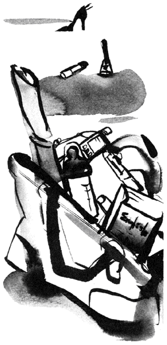
出会い
――ありのままの自分をさらけだしてますか？
「合コンやるけど、こない？」
先日のことだ。女友達から電話があった。
最近は忙しさにかまけて、恋愛は冬枯れ状態の私。ここらでぜひ、運命の出会いをものにしたいところ。内心は「ヤッホー」である。
しかも集まる男性陣のプロフィールを聞けば、なかなかの優良株ぞろい。逃す手はないだろう。
だが私の口から出たのは、「○ 子や、○ 美も来るの？ それなら彼女たちに久々に会いたいから行くわ」......こんな言葉であった。あくまでも目的の一番は女友達に会うこと。男性との出会いは、おまけみたいなもんとアピールしたのだ。
いい歳して物欲しげな女に思われたくないし、何より、この手の出会いに参加するたび、空振りばかりの私は、すでに学習していた。期待するほど落ち込みが大きいことを。そんな私は、期待もない、焦りもない、余裕の三十代を気取って飲み会の場所に向かったのだ。
ところが、その晩は私好みの男性が登場したではないか。年齢は三十代中盤。バツイチだが話も面白いし、外見もストライクゾーンである。
私は幹事役の女友達の配慮で、隣席という好ポジションを与えられ、彼と話を弾ませた。彼の趣味が山登りだと聞けば、山に興味などなくても子供の頃に登った富士山や、遠足で行った高尾山の記憶をたぐり、しっかり話を合わせた。お開き間際には名刺交換も終了。 手 応 えを十分に感じつつ私は、再会を約束して彼に手を振ったのだった。
ところが翌日もその次の日も、電話はかかってこない。こっちから電話をかけようか、とも考えたが、無反応な相手の態度は、私に興味がないことの裏返し。かける勇気は 萎 える。やがて一週間が過ぎる頃には、待つ気も失せていた。
そんな折りだ。幹事役の女友達から情報が入ったのは。
聞けば、私が気に入っていた彼が、翌日、別の女友達（仮にＡ子としよう）に電話をしたというのだ。しかも彼とＡ子は二人きりで食事にも行ったというではないか。
「へー。私は山登りが趣味って時点でパスだったから。ふーん、彼、Ａ子 狙 いだったの」
私は動揺を悟られぬよう、平然と答えたものの頭は「ガ～ン」である。何が富士山だ。何が高尾山だ。必死で話を合わせた自分が 滑 稽 に思えた。そして血が上った頭で考えた。
選ばれたＡ子と、選ばれなかった私の違いは何だろうと。
別に気に入った男性を取られたから、辛口になるわけではないが、Ａ子は三十歳過ぎの、ごく普通のＯＬである。小顔でつぶらな 瞳 が印象的だけれど、お世辞にも特別な美人とはいえない。が、幹事の女友達によれば、過去の合コンでもＡ子は一番人気をさらっているというのだ。他の女性メンバーが 箸 にも棒にもかからないなら 合 点 がいくが、 概 ね合コンに顔を出しているのは、大手企業の秘書や、美人アナウンサー、デパートガールと、華のあるメンツばかり。これら厳しいライバルが並ぶ中、男性を引きつけて止まないのが「普通」のＡ子だとは......。なぜだ？ なぜなんだぁ～？
私は、あの夜の場面をひもといてみた。
Ａ子は話術に 長 けているわけでもない。どちらかといえば聞き役だ。芝居でいえば 脇 役 。だが、彼女の場合、派手さはなくともキラリと光る名脇役のように思えるのだ。
そう感じたのは、変な話だがトイレにまつわるシーンを思い出したからだ。私や幹事役の女友達がトイレに立ったとき、テーブルの空気にそう変化は見られなかった。ところが、Ａ子が中座したときは、明らかに座のテンションが下がったのだ。短い沈黙が生まれるほどに。
前にも書いたように、Ａ子は 饒 舌 ではない。聞き役だ。でも思うに、彼女は「正直な」聞き上手だと思うのだ。彼女は私のように相手の気を引くために、必死で山登りの話にあいづちをうつような小細工をしない。
興味のある話には自然と耳を傾けるが、まったく興味のない話には無理してつきあわない。彼女のリアクションが素直だから、相手は「この話題で本当に大丈夫だろうか？」と変に気を回さず話ができる。結果、リラックスして楽しめるわけだ。
そして、もう一つ。Ａ子以外の私たち女性陣は、自分の仕事に関して何らかのアピールをしていた。二十代後半から三十代の私たちにとって、仕事の充実はシングルでいる〝 免罪符〟 にしやすい。だから仕事で自分が必要とされている状況を、それとなく披露するのも忘れない。
ところが、売れっ子アナウンサーの女友達が「忙しくて今日は睡眠三時間」と、嘆きと自慢をセットで口にした後、Ａ子はさりげなくこう言った。
「私はお茶くみにはじまって、お茶くみに終わった一日。今日は会議室十往復だもん」と。
焼鳥をパクつきながら、にっこり笑うＡ子の横顔には、虚栄を一切まとわない、すっぴんの心が見て取れた。彼女の言葉はテーブルにリラックスした笑いを生んだ。
よく結婚したカップルが「彼（彼女）とははじめて会った気がしなかった」と口にすることがあるが、飾らないＡ子は相手の男性に、これと通じる「懐かしさ」を与えるのではないだろうか。それは、彼女が「普通だから」の一言では片付けられないと思う。自分を包み隠さずさらせることは、見方によっては自分に自信がある証拠だ。Ａ子は普通のＯＬでも、三十過ぎてても、お茶くみしてても、それでも自分に素直で、ありのままの自分で勝負している女性だと思うのだ。
器用に自分を飾ることを覚えた私たちの中で、いや器用な女の中だからこそ、過剰なアクセサリーをまとわないＡ子は、男性の目にはひときわ光って映ったのだろう。
年齢とともに出会いがなくなったとぼやくが、なくなったのは出会いではなく、すっぴんの心をさらす勇気ではないだろうか。私たちは年齢を重ねるごとに、社会での 上 手 い泳ぎ方を覚えてきた。だが処世術をマスターするたび、心のメイクは濃くなったように思う。
見る目が肥えて、素顔をさらさない。そんな私たちは、男性を選びにくい、また男性に選ばれにくい女性になってしまったように感じる。
二十一世紀は心をクレンジングして、すっぴんの自分を取り戻したい。そんなふうに思っている。
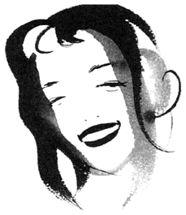
恋愛中毒
――相手に夢中になるあまり、自分を見失っていませんか？
「まるでドラッグ中毒だったな」
取材で向き合った冬美さん（二十七歳）が、そう 譬 えたのは、恋愛に話が及んだときだった。
女優の清水美砂に似たやさしい顔立ちをした彼女は、その外見を裏切らない穏やかな 喋 り方。だからだろう。上品な言葉に混じった「ドラッグ中毒」という響きが、余計にインパクトを生んだ。
冬美さんが中毒と呼んだ恋愛は、四カ月ほど前に終わっている。
二年前から大手商社で派遣社員をしていた彼女は、そこで商社マンの彼氏と知り合った。もともと彼からの強いアプローチではじまった二人の交際は、彼がお熱、彼女は冷静という組み合わせでの幕開けだった。
ところが、一年が過ぎる頃から、二人の関係が変わってきた。
「毎日だった電話が三日に一度、週に一度に減って。土曜日に彼の部屋に泊まってもダラダラ過ごすだけ。そのうち、日曜日の昼には追い立てられるように帰ることも増えて......」
そう、彼のテンションが下がってきたわけだ。ここで彼女も冷静なままなら「恋愛体温の低い二人」でカタがつくだろうが、彼女の愛情は彼とは対照的に右肩上がり。結婚まで考えるようになっていた。
だからこそ、彼女は彼の変化に動揺した。
何とか彼の気持ちを振り向かせようと、カワイイ女を演じたり、手料理を作ったり、手を替え品を替え、彼女は自分を売り込んでいった。
しかし、彼女が 健 気 に振舞えば振舞うほど、彼はさらに遠ざかるばかり。二人の距離はますます広がってしまったそうだ。
「追えば逃げる」は男女関係の 定 石 だろう。本当なら、ここで冷却期間をとったほうが賢明だったかもしれない。だが、渦中の冬美さんは混乱した頭で、こう考えるしかなかったそうだ。「逃げるものは、追わなければ」と。
冬美さんの執着は、ますますエスカレートしている。そう、まさに中毒患者のように。
朝一の社内メールにはじまり、夜は携帯電話へ一時間おきにコール。
時に明るく、時に涙声で、時に甘えて......冬美さんは彼の気持ちを取り戻そうと、必死に訴え続けた。もはや女友達との約束も、お 稽 古 事 もすべてキャンセル。彼のために真っ白なスケジュールを差し出して......。
それでも彼女の熱意は空回り。彼の携帯電話は電源が切られる状態が多くなり、ようやくつながっても、忙しいの一点張りで、会話にもならなかったという。
このままではフェードアウトしてしまう。危機感がピークに達した冬美さんは、電話だけでは飽きたらず、彼のマンションで張り込むようになった。ある夜は夕飯の食材を買い込み、またある日は手作りケーキを抱えて......。
エントランスにたたずむ冬美さんを見て、彼は驚いたというより 怯 えた顔をしたそうだ。が、彼女の熱意が通じたのだろうか。徐々に態度を軟化させ、外で待っていれば、部屋に上げてくれるようになった。
明るい 兆 しが見えはじめ、冬美さんが胸を躍らせたのは言うまでもない。
ところが待っていたのは意外な結末だった。
期末のある日、上司から呼び出された彼女に言い渡されたのは、派遣契約の打ち切り。通常なら更新できるのに、今回は無理と上司はきっぱり口にしたという。
しかも彼女の契約最終日を境に、彼と連絡が取れなくなってしまった。自宅の電話も携帯電話も「現在使われておりません」のアナウンスが入るのみ。驚いて彼のマンションに駆けつければ、なんと彼は引っ越した後だったのだ。
「つまり彼は、私にやさしくして油断させといて、会社に私のクビを切るように根回ししたり、新しい部屋を探してたんですよ」
にわかには信じられない話だが、そう考えれば合点がいく。
彼氏と仕事を同時に失った冬美さんが、言葉に尽くせない喪失感を味わったのは言うまでもない。
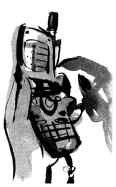
別れて四カ月。彼女はようやく新しい派遣先で仕事を再開しているものの、まだ新しい恋を探す気にはなれないという。
話を聞き終えて、私は彼女に同情した。一日も早く立ち直ってほしいとも思った。が、一方で彼女には申し訳ないけれど、こう思わずにいられなかった。逃げた彼氏も同じくらい気の毒だ、と。
冬美さんは彼を 一 途 に追うことで、愛情を示した。好きなのだから、その行動は一概に否定できない。けれど、彼女は彼の気持ちを考えたのだろうか。
冬美さんのように「全体重」を男性に預けたら、いくら力があっても支えきれない。男性は負担に思うだろう。しかも「恋愛だけ」の女性に、男性が感じることは、魅力の薄さ。序盤はともかく、体温の高い恋愛感情を男性に持続しろというほうが無理だと思うのだ。
知り合いに近く結婚する女性がいる。三十二歳の彼女は同い年の彼とつきあって七年になる。
彼女は普通のＯＬだが、驚くほどフットワークが軽い。趣味の日本舞踊教室はもとより、女友達や仕事仲間の誘いにも必ず顔を出す。たとえそこに、彼からデートの誘いが入ろうとも、彼女は自分の予定を優先させる。でも二人は険悪になるどころか、 羨 ましいほど旬の仲をキープしている。
彼らは知っているのだ。互いに自分の世界を持っていたほうが、輝いていられることを。
そして、どちらかの世界に相手を「吸収」すれば、とたんに輝きが失われてしまうことを。
愛情のバロメーターは二人の密着度にあると思われがちだが、自分の世界を彼一色に染めれば、恋愛の〝 賞味期限〟 は短くなる。
短期完結の恋愛ならともかく、長く良質の関係を続けたいのなら、彼以外に自分が没頭できる世界を持つべきではないだろうか。
相手と風通しのよい〝 距離〟 を持つことが、旬の恋愛を保つ 鍵 だと思うから。
痩せたい！
――魅力の見つけ方、再確認しませんか？
「やっぱ女は顔とスタイルよ」
以前、女友達、数人で飲んだ席でのこと。その中の一人、広子（二十七歳）がつぶやいた。
実は彼女、彼氏と別れたばかりだった。聞けば彼氏がスタイル抜群の女性になびいたことが、別れの引き金になったとか。
「私、ぜったい 痩 せて新しい恋、見つけるんだ！」
広子は大根サラダをつつきながら鼻息を荒くした。彼女は特別に太ってはいないが、前向きなダイエットは恋の痛手を忘れさせてくれそうである。なかば広子の慰め会となったテーブルで、私たちは彼女のダイエット宣言に乾杯したのだった。
広子に再会したのは、それから半年ほどたった夏の時期だった。前回と同じメンバーで再び集まったのだが、串焼き屋の座敷で彼女を見たとき、私は一瞬、自分の目を疑った。よく似た別の人が座っているのかと思ったほどだ。
ふっくらだった広子の 頬 の肉はすっかり落ち、大きくあいたニットの胸元には、鎖骨が痛々しいほどに浮き出ている。タバコをはさむ指など、簡単にポキリと折れそうなほどだ。
「十キロ痩せただけだから、まだまだよ」
私たちが驚きを口にすると、広子はそう言って笑った。 目 尻 には以前は気にならなかった小ジワがチリチリと寄っている。
「どうやって痩せたの？」
誰もが一斉に身を乗り出した。女性ならダイエットは最も興味のあるテーマである。目の前に、使用前・使用後のごとく、痩せた友達がいれば根掘り葉掘り聞きたくなるものだ。
しかし、広子は具体的な説明を避けた。
「食事を野菜中心にして、あとは油ものを控えた程度よ。特別なことは何もしてないわ」
いかにも無理せず、自然に痩せたような口振りである。私たちは疑心暗鬼ながら、彼女の言葉に納得するしかなかった。
もっとも人気の串焼き屋での集結。 美 味 しそうな焼き鳥やつくねを前にすれば色気より食い気、ダイエットどころではない。その後は、ビールと串焼きを手に大いに盛り上がったのだった。
話に夢中だったせいだろうか。デザートの抹茶アイスが運ばれてくるまで、私たちは広子がいないことに気づかなかった。
アイスを食べ終わっても広子は戻らない。
「化粧室で酔い 潰 れてるのかも」
溶けかけた広子のアイスを前に、心配した一人が迎えに立とうとした。すると隣の一人が彼女の腕をつかむ。行くなということだ。
「たぶん、コレしてるからさ」
止めた彼女は静かにそう言うと、口の中に人差し指を入れるまねをした。トイレで吐いているということだ。私たちは同時に目を丸くした。
止めた彼女は広子と同じ会社に勤めているのだが、驚く私たちを前にして、ぽつりぽつりと広子の日常を打ち明けてくれた。本人は隠していたが、広子のダイエットメニューは壮絶だという。朝はサラダと砂糖抜きのコーヒー。昼は弁当を持参するが、この弁当箱が幼稚園児サイズの超小型。しかも中身は、ご飯が入る部分にこんにゃく料理、おかずの部分にはトマトとレタスなど野菜が詰め込んであるだけ。これでは体が持たないと彼女は注意したそうだが、広子は聞く耳を持たなかったという。
アフターファイブの飲み会も広子はほとんど欠席した。たまに参加しても今晩のように途中でトイレに立つと、胃の中のものを残らず吐くまで出てこない。
「これじゃあ、彼氏どころか友達も失うよ......」
話し終わると彼女は唇を 噛 んだ。私たちが深刻にうなずいたのは言うまでもない。
広子はじきに戻ってきた。吐いたことを物語るように目は潤み、鼻は赤くなっている。口紅もすっかり落ちたその顔は、痛々しいばかりだ。しかし私たちの心配をよそに、広子は日本茶をすすりながら自分の指をうっとりと眺めている。スジ張って 骸 骨 みたいな指を。
私たちは広子に忠告した。もう十分に痩せたからダイエットは中止すべきだと。だが広子は耳を貸さない。それどころか私たちの言葉を遮るように、こう断言したのだ。彼氏ができない、自分が幸せになれないのはダイエットが足りないから。もっともっと痩せなければ自分は永遠に不幸なままだ......と。
広子がダイエットをやめたと聞いたのは、それから一カ月ほどしてからだ。彼氏ができたからではない。理由は栄養失調による緊急入院だった。
もう何年も前の話になるが、美容ライターのアシスタントをしていたことがある。
ボスは女性誌に、いくつもレギュラーページを持つ売れっ子だった。そのボス、私が言うのもなんだが、かなり太目だった。
だからというわけではないが、ボスと過ごした時間で、印象に残っているのが食事の場面なのだ。仕事が終わると、ボスはよく食べ、よく飲んだ。その姿は、いつも私の目を引きつけた。別に食べっぷりに感心したからではない。ボスに見とれたのは、別の理由からだ。ビールをあおるボスの手は、裏側がいつも真っ黒だった。無造作にまとめた髪には綿ぼこりが付いてることもしばしば。
死に物狂いで原稿を書き、鉛筆で手を汚し、ほこりの舞う倉庫で何百個もの化粧品を仕分けした名残である。
無邪気に食欲を見せるボスに、仕事で全力投球したそれらの〝 勲章〟 を見つけたとき、私の心の針は大きく振れた。アシスタントの分際で恐れ多いが、抱きしめたくなるほどチャーミングな魅力をボスに感じたのだ。太っているとか、痩せているとかを超越した魅力を。
「痩せたら幸せになれる」とダイエット中の女性は口を 揃 える。確かにスレンダーなボディが自信につながることもあるだろう。だが、外見だけ磨いても、そこに魅力......、人の心の針を振れさせる本物の魅力は存在するのだろうか？
「日だまりみたいな女です」
いつだったか食事中に、ボスのダンナさんがつぶやいた。
「どすこい、だけどね」
茶化しながらもボスは照笑いを浮かべていた。
ダイエットは否定しない。が、体重計では測れない魅力があることも忘れずにいたい。
そして、その魅力こそが、痩せた体よりもずっと「幸せさがし」の武器になることも覚えておきたいものだ。
男選び
――自分に合った相手をどう選ぶ？
結婚相談所が主催する「出会いのパーティー」に参加した。仕事柄、独身男女の取材を目的に潜入したわけだが、シングルの私である。「あわよくば！」と、気合いを込めて、会費五千円を支払ったのは言うまでもない。
が、悲しいかな、会場ではライターの血が騒ぎ、すっかり取材モードで恋の予感はゼロ。
その代わりといっては何だが、パーティーで知り合った女性二人が〝 収穫〟 となり、帰りにお茶をすることになった。
日比谷のカフェで向き合った二人は、ともに三十歳で、同じ会社に勤めていた。ピンクと水色、色違いのパシュミナストールを細い肩にまとった彼女たちは、お世辞抜きで 垢 抜 けているし、とてもかわいい。あの手のパーティーになど参加しなくても、簡単に彼氏が作れそうである。
しかし、そう水を向けると、ピンクと水色は、口を揃えて「私たち男運がないんですよー」とグロスのきいた唇を 尖 らせた。
聞けば、ピンクの女性（仮にＡ子）は、彼氏いない歴三年で、男と無縁の清く正しい生活を送っているという。一方の水色（仮にＢ子）は、彼氏は途切れないが、選ぶのは肩書きが一流でも中身は三流の男ばかり。最近も 二 股 をかけられ、別れてしまったとボヤく。
彼女たちは、今回みたいなパーティーや、合コンに数多く参加しているそうだ。そのたびに、男性からはトランプができるほどの名刺が集まるらしい。それなのに、コレという男性に巡り合えないと嘆く。なぜ彼女たちは、男選びに苦戦しているのだろう。
Ａ子さんもＢ子さんも、短大卒で大手商社に入り、十年目を迎えるベテランＯＬだ。一般職だが給料は平均以上だし、実家暮らしなので収入のほとんどは自分のために使える。つまり、現状の満足指数はかなり高いのだ。
しかし、彼女たちが属す商社は、いまだに寿退職が女の花道と考えられている古い社風。ベテランＯＬの二人は、そろそろ居場所を失いつつあった。加えて、同居している親も、結婚プレッシャーをかけてくる毎日......。三十歳を迎えた二人は、今の暮らしの〝 賞味期限〟 が終わろうとしていることを察していたのだ。
今後を憂えた彼女たちは、資格取得や転職も考えてみたそうだ。けれど、どれもピンとこない。そこで、焦点を絞ったのが結婚。安定した家庭を確保して、とりあえずＯＬからの〝 あがり〟 をつけようと、相手さがしに燃えていたわけだ。だが、なぜか経過は 芳 しくない。
二杯目のカプチーノが運ばれる頃に、その理由がおぼろげに見えてきた。
「この人は冷たそう」
「この人は背が低い」
二人は、パーティーでもらった男性の名刺をタロット占いのようにテーブルに並べると、カップを片手に感想を漏らしはじめた。
「この人は無口だし......」「この人は収入が不安定よね」などと、解説は続く。もちろん、感想を言うのは自由だ。が、気になったのは、彼女たちが、男性の性格やルックス、肩書きの短所ばかりを口にした点だ。
冷たそうな男性は、時折やさしい目をして笑っていたし、無口な男は、じっくり話すとユーモアのセンスがあった。なのに二人は、欠点を一つでも見つけた時点で、相手を〝 圏外〟 に葬ってしまう。なぜ、二人は相手の長所を見ようともしなかったのか。
二年前に結婚した女友達（三十二歳）がいる。国際線の客室乗務員だ。俗にいう、スッチーの彼女は、独身時代から男性によくもてた。一流企業の男性や青年実業家からも、誘われまくっていた。けれど、そんな彼女が夫として選んだのは、フリーのグラフィック・デザイナーで、三つ年下の男性だった。彼の年収は、彼女の半分程度だ。しかも身長も彼女より五センチは低い。
それでも彼女は、彼を選んだ。
彼女の日常を切り取ると見えてくることがある。スチュワーデスという仕事柄、彼女は精神的にも肉体的にも、かなり消耗すると言っていた。そんな彼女は独身時代、フライトの後に、誰かと会う予定など入れられなかったそうだ。
しかし彼と出会ってからは違った。疲れていればいるほど、彼と会いたくなったというのだ。彼女を心から、 癒 してくれる相手だったからだろう。結婚後、待望の赤ちゃんが生まれてからも、彼女は自分の意志で仕事を続けている。癒し系の彼は、彼女の留守中、家事に育児に奮戦してくれているそうだ。
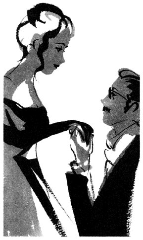
短所も含めて彼を愛せた女友達と、短所を見つけた途端に相手を退けたＡ子さんとＢ子さん。
この違いは、どこにあるのか。
安らげる相手との結婚、出産、仕事の復帰を果たした女友達は、自分がどういうタイプの人間で、どう生きていきたいか把握していた。だからこそ、相手に望むものと、不要なものがはっきりしていたと思うのだ。
一方の、Ａ子さんとＢ子さんは......。カウントダウンが聞こえる中、目指すものが見つからず結婚に焦点を絞った。そんな二人は、自分の性格も、将来の方向性も 曖 昧 なまま、パートナーを探していたのではないだろうか。コレ、 譬 えるなら夕食のメニューを決めないで、スーパーに行ったようなものか。どう生きたいか......献立が決まっていないから、パーティーという〝 売り場〟 に行っても、どの材料（男性）を選んでいいのか絞り込めない。必要なものと、不要なものが見分けられないから、とりあえず 完 璧 な男性を求めてしまったと思うのだ。
性格、ルックス、職業、家族構成......相手を選ぶ項目はいくつもあるが、肝心なのは自分が何に幸せを感じ、どう生きたいのか、その問いかけに答えを出すことではないだろうか。
自分自身がわかってくれば、自分の求める項目が絞り込める。それが相手の長所と重なれば、迷わず選べる。女友達のように、短所も含めて相手を愛せると思うのだ。
そして何より、「私はこう」という、自分のカラーを持っていたら、選んだ男性から、選ばれる女性になれるとも思うのだ。
男選びの 必 須 アイテムは、「男」を見抜く目、ではない。「自分」を見抜く目なのだから。
別離
――大切な人との別れを、どう乗り越えますか？
つい先日のこと、昔の彼氏と再会した。かれこれ七年ぶりの対面だった。
別れてから音信不通だった彼と会うことになったのは、私からのアプローチである。
ノンフィクションの取材ソースとして、ある特殊な仕事をしている人の話が必要になったのだが、周囲に話を聞ける人がいない。そこで思い当たったのが彼だったのだ。
約束の時間から少し遅れて、店に入ってきた彼は、会わなかった歳月を感じさせないほど、あの頃のままだった。不覚ながら私は、変わらない彼を前にして、たくさんの思い出を蘇らせていたかもしれない。
彼との出会いは、アメリカ西海岸だった。ドラマチックなシチュエーションも後押ししたのだろうか、帰国してすぐに私たちは本格的につきあいはじめた。
終わった恋なのでノロケることを許してほしいのだが、当時の私は彼にメロメロだった。あの頃、ヒットしていた『部屋とＹシャツと私』（カワイイ新妻予備軍の愛唱歌）が私のカラオケの定番だったことでもわかるように、私は一日も早く結婚して、エプロン姿で彼に料理を作る日を夢見ていたのだ。
ところが、ある事実が発覚して私は一気に天国から地獄に落ちた。彼には十年もの間、腐れ縁の彼女がいて、しかも、その女性といっしょに暮らしていたのだ。
もちろん私は激怒して彼に問いただした。が、彼ははぐらかすばかり。業を煮やした私は、彼女に直接会って白黒つけようと、出かけて......というより乗り込んでいったのだった。
しかし、近所の公園でいきり立って対面したものの、彼女の言葉は、さらに私を混乱させた。
エステティシャンの彼女は、ゆくゆくは自分の小さなサロンを持つのが夢だった。そのためには資金がいる。彼との生活は家賃をシェアして安く上げ、資金を作るため。つまり「 同 棲 」ではなく「同居」だというのだ。
「あなたが彼女でしょ。それでいいじゃない」
忘れもしない。彼女は怒ったように、そう言い残すと、さっさと帰ってしまったのだ。
頭の中にいくつもの「？」マークが浮かんだ。
腐れ縁の彼と一つ屋根の下で暮らしながら、乗り込んできた女（私）に「あなたが彼女」と花を持たせ、引き下がる女......。なんだ、そりゃ？ である。
だが、その後の展開をたどると、彼女の態度に合点がいくのだ。
彼は仕事もフリーランスだが、性格も根っからの自由人。安定を嫌い、その日その日を楽しく生きていくタイプ。悔しいけれど、それが魅力の男だった。
彼女は彼の生き方を熟知していた。そして彼を愛していたとも思う。だから彼と生涯パートナーでいるために、仕事の独立を夢見た。その夢を実現させるために、「彼女はあなた」と私に花を持たせることで、今の生活が壊れることを回避したのだろう。
そして何より、彼女は気づいていたのだ。新参者の女に、彼の生き方は理解できない。長くつきあえるはずないと。
彼女のカンは当たっていた。その後、私は不思議な三角関係に絶えず 苛 立 ち、苛々を解消するために、彼に結婚を迫っている。
もちろん自由人の彼が首を縦に振るはずもない。私は、彼の反応に再び苛立ち、最後は自爆するように、彼に別れを切り出した。
彼を憎み、腐れ縁女のことは、もっともっと憎みながら......。
別れてからは、食事が 喉 を通らなくて、一カ月が過ぎる頃には体重が四十キロを割った（今では想像もできない数字だ）。
やつれ果て、それでも 這 うように仕事場に行っては、ムキになって元気な自分を演じ、帰ってくると、ぐったりしたまま眠れない夜をやりすごした。
心の柔らかい場所に、裏切りや 嘘 という鋭利な刃物が何本も刺さっていた。そんな私にとって、ただ彼と彼女を恨むことが、唯一のエネルギー源だったように思う（恐いな）。
どうやって立ち直っていったか、具体的な理由はないのだが、三カ月、四カ月と時間が過ぎるうちに、薄紙を 剥 ぐように眠れない夜が減り、彼や彼女への恨みも和らいだように思う。もちろん、二人のことを苦々しく思い出すことはあった。けれども、この頃からは、以前のように悔し涙を流すかわりに、「 奴 らより幸せになるゾ！」と、怒りの扱い方が変化していったものだ。
幸せさがしに欲が出てきた頃からだろうか、私は自分がどう生きたいのか、何をやりたいのか、自分に問いかけるようになっていた。
そして気づいたのが、それらの答えが、実にあやふやだったことだ。あの頃、二十代後半だった私は、フリーアナウンサーをしていたが、年齢的なこととバブルの崩壊が重なり仕事は減り続けていた。生涯続けられる仕事を探そうと考えたものの「今さら」の気持ちが強かった。だから、平均的な幸せ......結婚を手に入れ、人生の 帳 尻 を合わせようとした。
思えば、腐れ縁女と私が勝敗を分けたのは、彼女のように私が、確固とした幸せのビジョンを持っていなかったからだろう。
そんなことに、一つ一つ気づいてから、私の中で確実に何かが変わっていった。
七年ぶりの再会は、くしくも自分の変化を 目 の当たりにする結果になった。
実は彼と会うことが決まったとき、私は気持ちが戻るのでは......と不安だった。しかし、いざ彼と向き合ってみると、心はちっとも揺れなかった。拍子抜けするほどに。
このとき、思った。もう自分が、あの頃と同じ場所にたたずんでいないことを。そう、別れをきっかけに自分を見つめ直した答えが、彼を前にしてようやく出たように思えたのだ。
別れは悲しい。本気の恋愛であればあるほど、言葉には尽くせないほどだ。
けれど、この時期に自分をいたわりながらも新しい一歩を踏み出せたら......。
悲しみの長いトンネルを抜けたとき、新しい仲間、仕事、恋人、そして何より新しい自分に出会えると思うのだ。
そのとき、きっと言えるはずだ。あの「さよなら」があったからこそ、今があると。
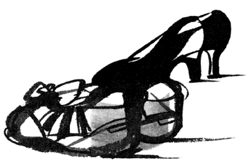
縁遠い女
――結婚は「安定」でしょうか？
私は「縁」という言葉を頻繁に使った時期があった。二十九歳から三十歳にかけて、 巷 でいう女のターニングポイントの頃である。
当時、私は「結婚したい症候群」にドップリつかっていた。
結婚適齢期になれば、自然の流れで相手は現れ、苦労することなく結婚の二文字は手に入ると信じていた。なのに、当時の私は三十代に王手が掛かっているというのに、結婚どころか、彼氏すらいないありさま。シングル歴を更新していたのだ。
「中山は強いから、一人で生きていけるタイプだよな」
仕事仲間との飲み会で、同世代の男性から二言目には、そう断言された。
私は内心泣きたくなるものの「大将、生ビールおかわりねっ！」なんて、ジョッキを一気にあおり、ヤケ気味にオヤジしていた。三十歳手前、かわいい素振りもできなくて、結婚願望も大人のプライドが邪魔をして口に出せず、私はかわいげのない女になっていった。
そんな私に、周りの男性たちは「結婚対象外」のレッテルをペタリと 貼 っていたのだ。
それでも、仕事が充実していれば、結婚だけにこだわらなかったと思う。けれど、当時は仕事も 完 璧 に、惰性だった。
二十代をフリーアナウンサーとして過ごしてきた私は、元気で明るいキャラクターを売りにしていた。ところが三十歳目前、無理が出てきた。
どんなに若作りしたって歳は隠せない。ファンデーションを小ジワにめり込ませながら、アルプスの少女ハイジみたいな格好をして、ステージで黄色い声を出している自分がむなしかった。
「み登りちゃん」が「み登りさん」に変わり、「さん」付けで 奉 られても、仕事は若手にどんどん取られ、私は隅っこへと追いやられていった。
その頃私は、年齢がネックにならない仕事、書く仕事を得ようとアプローチしていった。ところがこれも、順風満帆とはいかなかった。ほとんど未経験の私を相手にしてくれる出版社など、どこにもなかったのだ。
追い討ちをかけるように、同居中の親（特に母）からの結婚プレッシャーも、日増しに強まっていった。
目尻の小ジワに頬のシミ。胸とお尻はダブルで下がりはじめ、おまけに尿管結石で入院。ここにきて体の老いや不調までもがドドーっと押し寄せてきた。
このまま「男縁」待ちしていたら、私は一生結婚できないかもしれない。惰性の仕事を道連れに、生涯一人で生きるなんて、考えただけでゾッとした。このままではマズイ。ならばどうする。不安だらけの私は、自問自答の末、将来の安定を見つけようと動きはじめた。以前から、母に打診されていたお見合いに打って出ることにしたのだ。
数日後には、釣り書きと、写真が手元に届く、スピーディーな展開だった。これなら、三十までに結婚できるかもしれない。私は内心ほくそ笑んでいた。
ところが、見合いの現実は甘くはなかった。私が会ってきた男性は、三十代中盤から四十代前半にかけての方だった。
どの男性も肩書きは申し分なかった。けれど、何かが物足りないのだ。
「あとは、お若いお二人で......」の後、まったく会話が弾まない。
ある研究者は、二人きりになると「どうしましょう？」を連発し、渋谷の公園通りで立ち往生してしまった。
人波に散々こづかれ、「じゃあ、お茶でもしませんか？ こっち、こっち」と、私が先導しなければならなかった。
この男性を筆頭に「三十過ぎまで、何やってたの？」と言いたくなるような、女性無菌状態の男性があまりにも多かった。
そうかと思えば、会ったその日に「僕は子供は三人欲しい！」と、力説する体育教師もいた。会って間もない、はっきり言ってタイプでもない男性から、子供を三人産めと言われても、「はっ？」である。そのプロセスを考えると、とても目の前にいる熊みたいな人と、そういうことができるとは思えなかった。
「夕食は最低五品、バランスよく作ってください」なんて高飛車に言い放つ歯医者もいた。世間体のためだけに結婚を望んでいる、銀行マンもいた。
こんな調子なので話はまとまるはずもなく、私は見合い話を次々と断り、また先方からも「宅の息子にはもったいないお嬢さんですので......」と、取ってつけた言い回しで、断りが入った。
「今回は、ご縁がなかったということで」
このフレーズが、母とお見合いおばさんの間で、何度も行ったり来たりしていた。
「縁遠い娘だ」
父はぽつりと言った。
「女も歳をとると、結婚が難しくなるわね」
母も、苦り切っていた。
私は両親のリアクションをよそに、お見合いにうんざりしていた。うんざりするものの、縁遠い私は見合いにすがるしかなかった。
恋愛体質の女性は、一つの恋が終わる頃には、次の恋がはじまっているというのに、シングル体質の私は、まるでオリンピック周期。ひどいときには四年に一度の割でしか恋愛ができない。縁遠い自分を、恨めしく思った。
そんな頃、最後のチャンスとばかりに、ある見合い話が転がり込んできた。
先方は有名大学卒の三十四歳。上級公務員だった。会ってみると温厚でまじめ。話が弾むタイプではなかったけれど、いっしょにいても疲れない男性だった。
三十歳間際、大人といえる年齢の結婚は、胸キュンではなく、穏やかな気持ちでするものかも。私はそう思った。見合い相手が結婚後すぐに、ヨーロッパへ三年間の海外駐在が決まっていることも、私の中で追い風となった。
私は考えた末、結婚を決めた。
「縁があると、見合いは決まるの早いわねえ」
母は、満足気にうなずいていた。
不安だらけだった将来は、結婚が決まったことで、一気に安定路線にレールを曲げた。
私は甘いオブラートに包まれた、ほんわか気分に、しばらくつかっていた。
ところが、お見合い相手と結婚を前提に交際していくうちに、私の中に予期していなかった感情が生まれてきたのだ。
「このまま結婚して、幸せなのだろうか？」
結婚したいがために、お見合いまでしたのに、矛盾した感情である。
私は、悪魔のささやきが不意に口を出すたび、そっと戒めた。このまま結婚すればいいのだと。
なのに、私の中で煮えきらない 葛 藤 は日を追うごとに、大きくなっていった。
見合い相手の上司との食事会で「夫の手となり足となり、生きてください」と当たり前のように言われ、子供は二人、しばらく官舎で暮らし、頭金を貯めて一戸建てを買うといった、絵に描いたような結婚生活が現実的に見えてきた頃だ。
私の中の「これ、違う」は確信になってしまったのだ。
本当に、矛盾しているのだけれど......。
結局、私はこの話を破談にしてしまった。
お見合い相手には申し訳なかったが、今思うと見えてくることがある。
私は人と同じ幸せを欲するがあまり、無理して「縁」を作って、結婚という安定にすがりつきたかったのだ。不安を伴う、仕事や夢への未練を結婚と引き換えに、引き出しの奥にしまい込んで。
そんな私だから、実際に結婚が見えてきた途端、自分の中の本音の部分がうずいた。自分らしく、生きていきたいと。
あれからも相変わらず、私はシングルだ。
女の王道、結婚、出産を経験せず、一人で生きている三十女に、時に世間の風は冷たかったりもする。けれど強がりではなく、無理して作った「縁」を選ばなかったことに後悔はしていない。
人生は、何が起こるかわからない。人との縁も同じではないだろうか。
友人（三十一歳）は、車の渋滞で飛行機に乗り遅れた。キャンセル待ちでやっと乗れた飛行機の隣に座った男性と、現在交際している。
「あのとき、予定通りの飛行機に乗れてたら、彼とは永遠に知り合わなかったのね」
幸せそうな彼女の横顔を見ながら、私は縁の不思議さを感じた。
お 膳 立 てのない出会いを、あるとき、運命的なものだったと気づく瞬間がある。振り返れば、ドラマを生んでいる出会いだ。
その出会いがいつ来るのか、本当に来るのか、不安になるときもあるけれど、それは神のみぞ知る「縁」の不可思議。わからないからこそ、人生は面白いのかもしれない。
自分らしく生きていく通過点での、予告編なしの出会い。ふとした出会いが発展して自分にとって大切なものに育っていたら......。
それが本物の「縁」だと思うのだ。
モテる女
――多くの男性にちやほやされれば満足できますか？
先日、とある男性誌で「キープ君」についての取材を受けた。
キープ君とは、本命の彼氏以外に女性が押さえておく「本命未満」の男性のことだ（場合によっては、本命がいなくて、キープが数人、「並列状態」のこともあるそう）。何だか、二番手、三番手として扱われる男性には、一抹の 淋 しさ、というか情けなさを感じるが、それより何より、私が驚いたのは、キープ君を抱える女性たちの言い分だった。
編集者の方が、見せてくれたアンケートによると、女性は本命の彼では満たされない部分を、キープ君で補うという。たとえば本命がやさしくない男性なら、キープはやさしい人。本命が貧乏な学生なら、キープはお金持ち......という感じだ。本命なしの、並列状態キープの場合、男性たちのキャラクターがそれぞれ違っていて、日替わり定食のごとく、その日の気分で、会いたい相手を選ぶとか。
しかも、本命がいる場合でも、キープ君とエッチを含めた関係であることも珍しくないそう。
彼氏とキープ君のボーダーレス化が進んでいるわけだ。
そして女性たちは、キープの数こそが、女としての自信につながっているというのだ。
確かに、多くの男性に口説かれれば、女として自分の魅力が確認できる。メールや携帯に、男性たちからバンバン熱いメッセージが届けば、悪い気はしないものだ。
が、それって、イコール女の自信に直結させていいものだろうか。
先日、女友達から結婚式の招待状が届いた。封筒の裏に並んだ、彼女と彼氏の連名を見て、不覚にも私は涙を流してしまった。なにも、友達に先を越されるのが悲しかったのではない（そんなの、もう慣れっこである）。二人の門出が心からうれしかったのだ。
彼女（三十二歳）と彼氏（三十三歳）は、つきあって八年になる。うち六年間を東京と九州で遠距離恋愛していた。
二人は、大学時代にテニスサークルの活動を通じて知り合っているが、互いに 一 目 惚 れをしたわけではなく、当時は単なるサークル仲間の域を出なかったそうだ。
そんな二人が再会したのは、大学卒業から二年後。サークル仲間が集まった席でのことだった。
公立中学の教師になった彼女と、サラリーマンの彼は、互いに仕事を持つ立場で、自分の夢を語りあううちに、強く 魅 かれあったという。
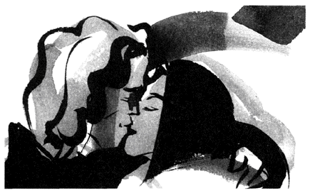
その後、二人はつきあいはじめたわけだが、順調に進んでいた交際は、二年後に転機を迎えている。もともと、実家の家業を継ぐ約束で、東京に出てきていた彼が、九州に戻ることになったからだ。
このとき、彼は彼女にプロポーズしている。
彼女は胸がキュンとするほど、彼の気持ちがうれしかったそうだ。しかし、プロポーズを受けていないのだ。
まだ教師を辞めたくない。これが理由だった。九州でも教師は続けられると思えるが、東京都の採用試験を受けて教師になった彼女は、別の地域で 教 鞭 をとれない。もちろん、九州で、採用試験を受け直すことは可能である。が、地方によっては地元の人を優先的に採用する傾向があるし、採用待ち状態の人が多数いる場合、教壇に立つまでに時間がかかる。
それに、何より彼女は、今の学校での教師としての仕事を、中途半端な状態で投げ出したくなかった。
結局、彼は一人で実家に戻り、以降、二人は遠距離恋愛をスタートさせた。けれど、その交際は順風満帆とはいかなかったようだ。
離れていれば、互いの気持ちがつかみ切れないときもある。会えないもどかしさからケンカになるときもある。目を見て、手をつなげば簡単に仲直りできることも、距離が邪魔をする。
そんなとき、彼女に別の男性が告白してきたり、彼の親が地元の女性との見合いを持ちかけてきたりと、転覆寸前の船を、さらに周囲が揺さぶることもあったそうだ。
しかし二人は、横恋慕やケンカのたびに大きな波をかぶりながらも、船を立て直して、歴史を紡いでいった。
やがて、交際八年目を迎えた今年、彼女が動いた。仕事を辞めて九州に行くことを決めたのだ。この行動は、正直言って意外だった。
教師として十年目を迎えた彼女は、教え子や父兄から、厚い信望を得ていた。仕事は間違いなく充実していたはずなのだ。
なのに彼女は心を決めた。
遠距離恋愛が成就した理由は何？ 彼女が、仕事より彼を選んだのは、なぜだろう。
「第二の人生を、彼と歩きたかったの」
彼女は、静かに言った。
とてもシンプルな理由だと思った。
彼女は東京での仕事に、未練はないと語った。なぜなら、全力投球できたからだ。そして、それは、彼のお陰なのだと彼女は言った。
彼は交際中に一度も「仕事を辞めて、九州に来い」と言わなかったそうだ。 喉 元 まで出かかる本音を、なぜ彼は口にしなかったのか。
彼女に、のびのびと仕事ができる環境を作ってあげたかったから。つまり、誰よりも彼女の生き方を理解していたからだ。
そんな彼を、彼女が次なるステージのパートナーに選んだのは、当然だろう。
そう、二人はルックスや肩書きで魅かれあったのではない。時にぶつかり合いながらも、互いの生き方を尊重し合い、 絆 を深めていった。だからこそ、唯一無二の相手として、互いを選び合えたと思う。
冒頭で、キープ君を抱える女性の話をした。
彼女たちは、自分を囲む男性の数だけ、モテる女として、自信をつけているという。
が、本命とキープが簡単に入れ代わるような薄っぺらなつきあいから、何か生まれるのだろうか......。
スペアのきく彼氏が、何十人、何百人いる女より、たった一人の男と、深い信頼関係を結べる女こそ、本当の「モテる女」だと私は思うのだ。
挫折
――つまずいたら、どうやって立ち上がりますか？
ある夜、とりとめなく女友達と長電話をしていたときのこと。彼女が同僚にまつわる話をふってきた。
何やら、その同僚の女性（三十歳・仮にＡ子さん）、一年前に結婚したものの、早くも半年で別居。現在は弁護士を立てて、離婚に向け話し合いの真っ最中だという。
「で、もめている理由は何なの？」
直接本人を知らない気安さから、私はワイドショーを 覗 き見る感覚で尋ねた。すると、原因はありがちだが夫の女性問題。相手の女と夫とは数年来の腐れ縁で、Ａ子さんは結婚前から 二 股 をかけられていたらしい。
事実を知ったＡ子さんは、あまりのショックにゲキ 痩 せして、今は休職中だという。
きっとＡ子さんという人は、繊細で純粋な心の持ち主なのだろう。だから、夫の裏切りに深く心を傷つけられてしまった。
そう感じた私は、同情の言葉を口にし、ふと思い出して、こうつけ加えた。
「でも、あなたの会社には、繊細な女と、強気な女、両極端な女性がいるんだね」と。
以前、女友達から聞いた、強気な同僚の 噂 話 を思い出しての一言だった。ところが、女友達の返事に、私の頭は混乱した。ゲキ痩せしたＡ子さんと強気な女は、同一人物だというのだ。
確か、強気女は、大学も就職も第一志望を突破し、素敵な彼も手に入れ、「私は世界一、強運な女」と豪語して 止 まないタイプだったはず。それが、別居で別人のように落ち込んでしまうとは......。 挫 折 が人に与える影響の大きさを痛感した一幕だった。
こういう不幸な出来事を比較するのは忍びないのだが、Ａ子さんと似通ったケースを、以前に取材したことがある。
その女性（三十一歳・仮にＢ子さん）は、結婚を目前にして、彼氏の浮気が発覚した。 呆 れたことに、浮気相手はＢ子さんの親友だった。
ありがちな話だが、親友の部屋を約束なく訪れたＢ子さんは、そこで婚約者と鉢合わせ。最悪の場面を目の当たりにして、すべてを知ったわけだ。
Ｂ子さんは、もちろん破談を考えた。が、実家の両親は結婚を心待ちにしていたし、招待状は発送済みで、出欠の返事もちらほら戻ってきていた。もう簡単に引き返せない状況だったのだ。このまま気持ちを殺して結婚すべきかも......。混乱した頭は、そう「大人の結論」を出しかけたそうだ。けれど悩みに悩んだ末、彼女は結婚を白紙に戻している。
どんなに努力しても、彼への信頼が回復しなかったからだ。
特別注文で頼んだウエディングドレスは、すでに届けられていた。ドレスが入ったケースの横で、招待客たちに破談の連絡を入れながら、彼女は本気で死にたいと思ったそうだ。
未来の夫と、親友を同時に失ったのだから、その痛みは計り知れない。「死」という言葉は決して大げさではなかったろう。
それでも彼女は死ななかった。それどころか、無理してご飯を食べ、眠れなくてもベッドに入り、真っ赤な目をしていつもの電車に乗った。心ない上司の興味本位な 詮 索 にも、同僚の過剰な励ましにも、笑顔で対応した。
心は擦り切れてボロボロだった。でも、何があろうと日々の生活から逃げなかった。
小枝のようにポキリと折れてしまったＡ子さん。たわんでも折れなかったＢ子さん......。「人生の挫折」という同じ場面で、二人のたどった道が違ったのは、なぜだろう。
つまずくことを知らなかったＡ子さんに比べ、Ｂ子さんの過去は順風満帆とは言い難い。
高校時代に父親が事業に失敗したため、彼女は大学受験を断念して就職している。数年後、転職に動いたときには、学歴やキャリアの壁に阻まれ、願いは 叶 わなかった。彼女はすでに、いくつかの挫折を経験しているのだ。
とすると、Ｂ子さんは、経験者だから挫折に免疫ができていた？ 慣れっこだから乗り越えられたのだろうか。その答えは、彼女の言葉をつなぎ合わせると見えてくる。
「挫折した頃は、もうヤケッパチだったのよ」
大学進学を断念したときは、進学組の友達を 妬 ましく思い、両親を恨むことすらあったそうだ。転職に失敗したときは、自分の無力さを痛感し、惨めさに打ちのめされたという。
夢や希望を持つから、挫折を味わう。ならば殻に閉じこもって、うつむいて生きれば、傷つかずに済む。そう考えたこともあった。
しかし、彼女は今、こう感想を漏らす。
「あの挫折があったから、今の私があるの」
彼女は、進学を断念した翌年から、いつか大学に入ることを目標に、毎月五千円の学資積立を自分に義務づけたそうだ。転職で挫折した折りには、資格の必要性を痛感して、簿記検定の取得に目標を定めている。
つまり、彼女は挫折で落ち込んだと同時に、その挫折を新しい目標づくりのきっかけにしているのだ。
現在、資格が評価され、 狙 い通りの転職を果たしている彼女は、破談の一件を語った折りに、こうつけ加えている。十数年続けてきた学資積立が十分な金額になったので、夜学への入学を検討中だと。やはり、新たな目標をつくることで、気持ちを支えていたのだ。
仕事、恋愛、人間関係......、これらにつまずいたとき挫折が人から奪うものは何だろう。自信、ではないだろうか。人は多かれ少なかれ、自信に背中を押され、前に進むものだ。だからこそ、これを失ったとき、人は貝のように心を閉ざす。一歩も進めなくなる。
が、時間はかかっても（かかって当然！）、新たな目標を手に起き上がれたら......。人は今まで以上に強くなれる。そして痛みを知った分、やさしくなれるのではないだろうか。
そう、挫折とは、人から自信を奪い取る。しかし、それを乗り越えたことで、一回り大きな自信を与えてくれるものなのだ。
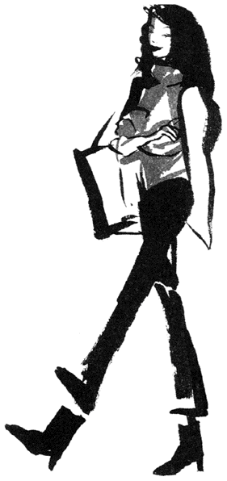
愛される女
――愛されようと、自分を飾っていませんか？
「愛される女」は「誰に」愛されるかで、定義が変わってくると思うのだが、ここでは「男に愛される女」ではなく、もっと広い意味......たとえば職場や友人関係の中で「愛されるキャラクター」について考えてみたいと思う。
恋愛が絡まない関係では、フェロモンや甘えん坊のキャラクターも武器にはならない。
では何が愛される条件なのだろう。そう考え、真っ先に思い浮かぶのが「性格のよさ」である。職場でも友達の中でも人柄のよさをアピールすれば好かれそう。愛される女の第一条件に当てはまると思うが、どうだろう。
私の知り合いに珍しいほど性格満点の女性がいる。
彼女......早苗さん（三十一歳）とは年に数回、食事をする仲だ。その早苗さんと久しぶりに話をしたのは先月のこと。彼女は律儀にも毎年、私の誕生日にカードを送ってくれるのだが、今年もしかり。それで彼女にお礼の電話を入れたのだった。
「わあ、ご 無 沙 汰 してます。お元気ですか？」
彼女は開口一番、明るい声を出す。世間話をしながらも、その親しみのこもった口調が会話のキャッチボールをスムーズにする。
しかも彼女は感じのよさだけではなく、気配りも忘れない。たとえば会話の中で私が「誕生日ったって、この歳になると心から喜べなくてサ」などとボヤけば、彼女は「何言ってるんです。私、お手本にしてるんですから、ますますイイ女になってくださいね」と、うれしくなるコメントを、すかさず用意してくれるのだ。
文具メーカーでＯＬをしている彼女は、すでに十年のキャリアだが、このキャラクターである。上司や先輩はもとより、同僚からも好感を持たれていたのは言うまでもない。
ところが、その晩、彼女は珍しく受話器の向こうで小さくため息をついた。話題が仕事に及んだときだ。
「人間関係に自信をなくしてしまって......」
これだけいい人の早苗さんである。私は彼女の言葉に、きっと傍若無人な上司が異動になってきたとか、とんでもなくわがままな後輩に手を焼いているとか、厄介な誰かが人間関係を壊しているのだと想像した。ところが、彼女の口からは予想外の言葉が返ってきた。
「私、仲間外れにされちゃったんです」
自信喪失の理由は自分自身にあるというのだ。事の発端は、同僚の女性たちが週末を利用して温泉旅行の計画を立てていたことにはじまる。その女性陣とはランチを毎日いっしょに食べる仲。早苗さんは当然、自分も旅行に誘われるだろうと思っていた。ところが結局、声は掛けられなかった。ちなみに旅行前も、旅行後も、同僚たちに変化はみられない。特別に彼女を嫌っている様子はないという。
「いい人」の見本みたいな彼女。なのに、なぜ、旅行の仲間から外されてしまったのだろう？ 私は首をひねらずにはいられなかった。
早苗さんと飲んだ席でのことを思い出してみても、問題は見当たらない。
彼女はお酒が入っても相変わらず「いい人」だ。誰かのグラスが 空 けば「おかわりは？」と手を差し出し、新しいつまみがテーブルに届けばせっせと全員の分を皿に取り分ける。
飲みながらの会話でも、たとえば結婚観を問えば「価値観の合う人ですね。それに結婚は縁ですから、焦ってないし」と、穏やかな笑顔。仕事の話を振れば「上司にも同僚にも恵まれてるんです」とやはり気配りのコメント。
まさしく、パーフェクトなのだ。
だが、ふと思い当たった。パーフェクトという言葉はそっくり、 隙 のない女性と言い換えられることに。
いっしょに飲んでいた女性の中には、彼氏が浮気性で殴り合いのケンカが絶えないだの、母親と大ゲンカをして家出中だとか、あけすけに恥部をさらす仲間もいた。やれやれという内容だし、酔ってくだ巻く彼女たちは隙だらけだ。しかし、そんな彼女たちにこそ、強い親近感が湧くのも事実なのだ。
温泉旅行では、誰もが身も心もリラックスしたい。メンバーには気心が知れた仲間を選ぶだろう。早苗さんが、その中に含まれなかったのは、彼女の隙のなさが裏目に出た結果ではないだろうか。繰り返すが彼女は「いい人」だ。でも、いい人の彼女がたどり着いた先は、「嫌われない女」であり、「愛される女」ではなかったのだ。
私の周りには、三十代の独身女性がとても多い。仕事を強気でこなすシングルの中には「嫌われている女」と自己分析する女性すらいる。その中でも特に「アク」が強いのが、三十三歳でバリバリと仕事をこなすキャリア派の女友達だ。
彼女は曲がったことが大嫌い。間違っていれば上司にはもとより、誰にだって 噛 みつく。そんな彼女である。当然だが、男性社員にも、後輩の女性にすら恐れられていた。
とても「愛される女」には程遠かったのだ。
「あのコは仕事に生きるタイプね」
女友達は口を 揃 えて断言していたものだ。
ところが、驚いたことに彼女は突然、恋をしたのだ。好きになった相手は飲み会で知り合った男性。それも二十代中盤の年下くんである。強気の彼女が、このときばかりはいつもの勢いを失い、普通の女の子に戻っていた。
やがて彼女は悩んだ末、意を決して男性に気持ちを打ち明けている。そして悲しいかな玉砕した。彼女は私の前で「へへ、フラれちゃった......」とおどけて見せた。しかし、その目は行き場を失って泳いでいた。
かたくなに強がる横顔を見ながら思った。彼女は紛れもなく愛すべきキャラクターだと。
計算や駆け引き抜きで、うっかりさらされる「素顔」は、どんな美辞麗句よりも相手の心を揺さぶるのではないだろうか。
「愛される女」は狙ってなれるものではない。
「愛しい」という気持ちは、飾らないピュアな部分に触れたとき、相手の心にそっと宿る感情だと思うから。
焦り
――人より遅れていると、不安になりますか？
最近、取材したシングル女性の多くから聞かれるのが、「○○ までに、○○ したい」というフレーズだ。
「来年から天中殺と大殺界がダブルで来るから、今年中に結婚したい！」（三十歳・ＯＬ）
「仕事で生き残るために、来年までにレギュラーを取りたい」（二十八歳・アナウンサー）
などが、それである。もちろん目標をもった生き方は、大切だと思う。が、「○○ までに......」と強く自分に〝 締め切り〟 を作ることは、最善の手段なのだろうか。
取材した千佳さん（仮名・二十八歳）も、まさに自分で「区切り」を作っていた一人だ。
国内の証券会社で丸六年、店頭業務を担当していた彼女は、一年前に会社を退職した。理由は、外資系の証券会社に転職するため。三十歳までに経験を積んで、将来は証券アナリストを目指そうと考えていたのだ。
ところが、退職から一年近く就職活動を続けているものの、まだ就職先は決まっていない。シンプルなオフホワイトのスーツが似合う彼女は、清潔感に 溢 れ、話の内容も 聡 明 だ。面接でも悪い印象は与えないと思うのだが、なぜ合格ラインから漏れてしまうのだろう。
話を掘り下げてみると、見えてくることがあった。
彼女が退職を決めた一年前は、女友達の第一次結婚ラッシュがピークを迎えていた頃と重なっている。つまり、毎月のように結婚式に呼ばれていた彼女は、ウエディングベルがバンバン鳴り響くさなかに、就職活動をしていたわけだ。
とはいっても、「結婚より、今は仕事が第一」と、プライオリティーをはっきりさせている彼女は、友人の結婚式に参加しても、結婚への焦りは感じなかった。それどころか、結婚式に出るたびに「早く就職先を決めるゾ」と仕事へのボルテージを上げていたという。
友人の結婚がカンフル剤になった彼女は、新聞の求人広告、求人雑誌、インターネットまで駆使して、企業にレジュメを送りまくった。多いときは週に四回も採用試験を受けたというから、その気合いの入り具合は本物である。
むろんパワー全開の彼女は、面接では自己アピールに燃えた。思い入れが強い会社の試験では、目に涙を浮かべ、面接官に採用してほしいと直訴したほどだった。
それなのに、彼女のもとに届くのは「遺憾ながら......」と記された不採用通知ばかり。
英語もそこそこ話せる彼女は、他の受験者より見劣ることはなかったという。それなのに採用されないのは......。
唐突な 譬 えだが、見ず知らずの男性が目をギンギンに血走らせ、交際を迫ってきたら、あなたはどう思うだろう。私だったら、引く。それも、かなり引くと思う。
彼女は、面接中に目に涙まで 溜 めて採用を求めた。切望、熱望、渇望......それでも足りないほどの、強い就職願望をあらわしている。
面接官に彼女の意気込みは、どう映ったか。
もしかして、彼女の涙は「熱意」ではなく、「焦り」と受け取られてしまったのでは......。これが裏目に出ているように思うのだ。
それにしても、なぜ彼女はここまで、焦ってしまったのか。彼女は友達の結婚に、焦りを感じるどころか、仕事へのボルテージが上がったと言っていた。が、うがった見方かもしれないが、彼女は結婚で先を行く友達に追い越されないよう、無意識のうちに仕事でステップアップして 帳 尻 を合わせようとしたのではないか。だから、転職を急ぎ、面接官を「引かせる」ほど、 躍 起 になってしまったように思う。
結婚、出産、仕事......など、誰かに「お先に！」と抜かれるたびに襲ってくる、焦り。気持ちを空回りさせ、周囲まで引かせてしまう、このやっかいな感情とは、どう関わっていけばいいのだろう。
知り合いの君枝さんは、三十八歳の受験生だ。介護福祉士の資格をとるべく、三年前にＯＬから老人ホームのヘルパーに転職し、実地経験を積みながら、来年の受験に備えている。
「小学校の頃も、給食を食べるの一番遅かったけど、仕事も自分に合うものを見つけるのに時間、かかっちゃって」
はじめて会ったとき、彼女は素朴な笑顔を浮かべて、そう言ったものだ。
彼女は、 痴 呆 症 にかかった祖母を、母親とともに介護して見送った経験から、この道を志しているのだが、当時の年齢は三十五歳。確かにこの歳で進路を決めた彼女は、人より〝 歩調〟 が遅いと言えるだろう。
しかし、普通なら転職より、結婚を視野に入れたくなる年頃で、自分のアンテナに反応した仕事へ、迷わず手を伸ばした彼女は......。
歩調は遅いが、人の足並みに惑わされない〝 自分の歩幅〟 をもっていると言えないだろうか。
そんな彼女に、恋愛にまつわる質問をしたことがある。きっと「焦らず、ゆっくり」という答えが返ってくると思ったのだが、「去年からつきあっている彼がいるんです」と言うではないか。仕事と受験勉強に追われている彼女に、彼氏までいるとは、少し意外な気がした。けれど、考えてみれば十分にうなずける。
前出の千佳さんは、焦る余りに面接官に引かれてしまった。とすれば、逆に君枝さんのように自分の歩幅で歩き続けている女性は......。そう、人を引きつけると思うのだ。
誰かが自分より先に進めば、焦りはつきまとう。できれば、全速力で追いかけて、追いつき、追い越したくなる。
しかし、焦りの渦中で、手にしたものが本当に自分にとっての幸せなのだろうか。
年齢的に焦ってした妥協の結婚、金銭的に焦って選んだ就職先......。どれもが後悔をともなうように思えてならない。
焦っているときこそ、あえて深呼吸。一休みして自分のペースを取り戻すことが、実は幸せへの近道だと思うのだ。
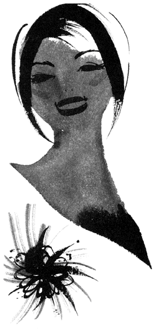
ケータイ
――淋しさとのつきあい方、知っていますか？
夕方の渋谷は一人で笑っている人が多い。
渋谷駅から地下鉄で一本の場所に暮らす私は、仕事の帰り頻繁に渋谷に立ち寄る。ＪＲから地下鉄に乗り換えるだけのときもあれば、夕食や買い物のためにセンター街や公園通りを抜けることもある。そのいたる所にたたずんでいるのだ。一人で笑っている人が......。
男女は問わないが、年齢は十代から二十代だろう。彼らは耳に携帯電話を押しつけている。そう、誰かと話して笑っているわけだ。理由がわかれば合点がいくが、あっちでもこっちでも一人笑いしている光景は、かなり奇妙である。それに聞くとはなしに話す内容を耳にすれば......。
「どうしてる？」だの「渋谷ぁ、出てこない？」だの「○ 子とケンカして......」などの世間話ばかり。とても携帯電話を使ってまで話す、緊急な用件とは思えないのだ。それなのに彼らは、切ったそばから次の相手にコールして、再びどうでもいい話を繰り返している。まるでケータイにすがるように......。
〝 ケータイ依存症〟 そう呼びたくなる人々、 巷 に 溢 れていないだろうか。
知人に紹介されたカナエさん（仮名二十八歳）も、片ときも携帯電話を手離さない一人だった。彼女とは取材が目的で向き合ったのだが、話の合間に何度も彼女のケータイは『星に願いを』の着メロを奏でた。婚約者との破談、転職、現在の派遣で働く状況......、ドラマチックな話は電話が鳴るたびに腰を折られる格好になった。けれども彼女は話の中断を気にする様子もなく、飛びつくようにケータイを耳にあてる。そして「あ、今、立て込んでて。あとでかける」だの「あ、元気？ うんうん」などと、やりとりしている。取材する側のマナーとして私は自分の携帯は電源を切ってある。もちろん相手に同じことを強要するつもりはない。けれど電話を切るたびに「で、どこまで話しましたっけ？」と話が振り出しに戻る効率の悪さには、いささか閉口した。
「お友達が多いんですね」
何度目かの電話を終えた彼女に、私はそう水を向けた。すると彼女はキティちゃんのストラップに指を絡めながら、ケータイのボタンを器用に操り、あるディスプレイ表示を私に向けた。
「メモリーダイヤルに登録してる友達の数ね、もうじき三百人突破するんですよ」
数字を見つめながら、彼女は 嬉 々 とした笑顔を浮かべている。彼女は普通のＯＬである。転職したといっても、そう大幅に交友関係が広がることはないだろう。なのに、この友達の多さは......。なぜだろうか。
その理由は、取材の帰りにわかった。
地元の駅から自宅へと歩いていたら、私の携帯電話が鳴った。カナエさんからだった。
「今日はどうもありがとう」
私が取材の礼を口にすると、彼女も「こちらこそ」と気配りの返事をくれる。私は取材相手からわざわざ電話をもらったことに恐縮しつつ、儀礼的なやりとりで電話を切ろうとした。カナエさんは取材相手、電話を引き延ばす理由は何もないのだから。ところがカナエさんはなかなか電話を切ろうとしない。
「今、バスで帰る途中なんですけど、道が混んでて動かないんですよー」などと、のんきな声を出している。
私は 戸 惑 った。つまりカナエさんは、退屈だから私に話し相手をしろということなのだ。別にいい。いいが、今日会ったばかりの、それも取材で向き合っただけの私を世間話の相手に選ぶとは......。首を 傾 げた私だが、同時に合点がいった。彼女にとっては一度でもしゃべれば、もう〝 お友達〟 なのだ。言い換えれば友達審査のハードルがものすごく低いわけだ。メモリー登録が三百人に膨らむのも納得。私ですらすでに彼女のケータイに友達としてエントリーされているのだから。
〝 お友達〟 の私は、しばし話し相手を兼ねて彼女に質問してみた。携帯電話についてだ。
彼女の一カ月の携帯電話の料金は平均三万円。多い月は五万円近くになるそうだ。給料は月に二十万円弱だが実家暮らしだから平気、と彼女は笑う。そして電話代を削るくらいなら食費を削ると当然のように言い切る。その言葉通り、彼女は安いハンバーガーで昼食を済ませると、高い通話料を気にするでもなく、昼休み中もケータイでしゃべり続ける。
それにしても......、私は感度の悪い携帯電話を切ってから首をひねった。なぜ、彼女はこんなにケータイに執着するのだろうかと。
◆ ボタンひとつでつながる〝 誰か〟 より、自分と向き合ってみよう
カナエさんは 淋 しいときはもとより、多くの場合は、つい気づくとケータイを鳴らしているという。ほとんど癖だとか。いつでも、どこでもケータイは発信ボタンひとつで彼女と相手をラインで 繋 ぐ。彼女は相手の今を知り、自分の今を報告することで安心できるそうだ。だからこそ、「安心材料」に不自由しないよう、多くの電話番号を登録しているわけだ。
四六時中、誰かとラインを通じ密着している彼女。だが、そこに友情は育っているのだろうか。淋しさを埋めるために相手を求め、相手からも同じ理由で求められる。この関係、友情と呼べるのだろうか？
決めつけてはいけないが、彼女たちの行動、似た者同士がケータイを通じてもたれ合っているだけに思えてならない。そこから生まれるものは何だろう？ 本物の友情？ いや、高額な通話料だけではないだろうか。
知り合いの売れっ子ライターは携帯電話を持たない主義だ。「必要以上に追いかけられたくないから」が、その理由である。彼の言葉に思う。巷にケータイが溢れているということは、世の中に「追いかけたい人」「追いかけられたい人」......誰かと繋がっていないと不安でたまらない人が、山ほどいる裏返しだと。ケータイはそんな人たちにとって不安解消のアイテム〝 お守り〟 と言い換えられるのかもしれない。だが、忘れずにいたい。このお守り、使い方を間違えると、ふやけた人間関係と引き換えに、個としての自分を見失わせる 両 刃 の 剣 。危険な小道具になりうることを。
過去
――痛みをバネにできますか？
女同士は仲よくなる過程で、互いの過去を告白しあうことがある。
先日、知り合って間もない女性とお酒を飲んだが、その席でも過去に話が及んだ。女性は両親の離婚で傷ついたことを語り、私は二十代のクリスマス・イブに、男性に告白して玉砕した過去を話した。すると途端に、遠慮がちだった私たちの距離はぐんと縮まった。過去の告白は相手を信頼している 証 。ある意味、友情を 育 む上で 必 須 アイテムなのかもしれない。
だが私は、しみじみと過去を振り返りながら思った。当時あんなに悲しかったエピソードたちが、すでに「思い出」に変わっていることを。裏を返せば、思い出だからこそ、友情作りの小道具に使えるのだということを。
しかし時間が流れても、過去が思い出へと昇華しないケースも少なくないようなのだ。
取材で知り合った香織さん（二十八歳）も、長く過去を引きずった一人だった。彼女は短大を卒業後、衣料メーカーに勤務しているが、社内では「イキのいい女」と評されているそうだ。が、過去を引きずっていた頃、彼女は別の評価を得ていた。「暗い女」......私は話半ばでそう想像したが、意外にも当時の彼女は「いい人」と周囲から言われていたのだ。彼女は上司からの命令はもとより、同僚から仕事を頼まれても、嫌な顔ひとつせず請け負った。それで自分の退社時間が深夜になろうともだ。しかも仕事だけではなく、プライベートでも彼女は「いい人」を貫いた。疲れがピークでも同僚に誘われれば断らない。好きでもないお酒を飲み、聞きたくもない愚痴に延々耳を傾けることもしばしば。上司との酒の席ではマメに酌をし、オヤジギャグにも笑った。
もちろん彼女が根っからの「いい人」で、三度の飯より仕事と気配りが好きなら何も問題はない。ところが彼女は「いい人」であるために、かなり無理をしていた。そのため反動が定期的に彼女を襲っていたというのだ。
「いい人」モードの平日が終了し、迎える週末。彼女は恐ろしいほど大量の食べ物を口に入れたという。菓子パン五個、かつ丼弁当、カップラーメン、三連プリン、ケーキ四個。
これは、ある週末に彼女が一度に口にした食べ物だ。すごい量である。しかも何かに取りつかれたように食べた後、トイレで残らず吐き出すというのだ。
ストレスを過食で発散するくらいなら「いい人」を下りて楽になればいい。そう頭ではわかるのだが、彼女は簡単に「いい人」から卒業できなかった。その理由は、彼女の過去にあった。
中学時代の彼女は、グループのリーダー的な存在で、思ったことをポンポン口にする姉御肌だった。仲間たちは、そんな彼女に従っていたそうだ。
ところが、ある朝から仲間の態度が一変した。 挨 拶 しても無視。質問しても無視。彼女の言葉を借りれば、存在自体がないものとして扱われたそうだ。もちろん彼女は、なんとか友人たちとの仲を修復させようと努力してみた。が、仲間たちの態度はかたくななまま。それどころか教科書に落書きしたり、体操着を隠したりと、無視は陰湿ないじめへと発展していった。香織さんは他のクラスメートに救いを求めた。しかし快く彼女を迎え入れてくれる友人はいなかったという。
やがて彼女は中学を卒業。私立高校へ入学している。環境が変わり、針のむしろから解放されたわけだ。ところが思わぬ後遺症が待っていたのだ。新しい友人と向き合ったとき、彼女は 怖 じ 気 づいてしまった。自分の真の性格を出せば再び仲間外れにされる。あの疎外感は死んでも味わいたくない。気づくと友人たちの前で「いい人」を演じる自分が誕生していたという。人畜無害なら嫌われない。彼女は嫌われることを恐れるあまり、まったく人に心を開けなくなってしまったのだ。
それから実に十二年、彼女は「いい人」を続けてきた。過去を引きずった十二年と言い換えられるかもしれない。
そんな香織さんが、過去にピリオドを打ったきっかけは、新入社員の一言だった。同じ課に配属された女子社員は二十歳。 物 怖 じしない世代だ。
その新人が、あっけらかんと香織さんに言ったそうだ。「先輩ったら、コンビニ女ですよ」と。便利に使われるだけの女......。新人にとっては軽口だろうが、この言葉は香織さんの胸にずっしり響いた。これが引き金になり、彼女は恐る恐る自分自身を振り返っている。そして見えてきたのは、人の顔色を気にし、人に合わせるだけの自分。「いい人」と呼ばれる自分には魅力ひとつもないという現実だった。彼女が自分を取り戻すために動きはじめたのはこの頃からだ。
「嫌われるのを覚悟で同僚に『ノー』を言ったときは、心臓がバクバクして壊れそうだった」
ありのままの自分を理解してもらうため、彼女は決死の覚悟ではじめの一歩を踏み出しているのだ。当初「いい人」でなくなった彼女に、同僚は面食らったそうだ。しかし、きちんと理由を話して「ノー」を言う彼女に白い目を向ける相手は一人もいなかった。それどころか自分の個性を出しはじめたことで、彼女の周りには人が集まるようになっていった。彼女が「イキのいい女」と評されるようになったのは、それからしばらくしてのことだ。
彼女の話を聞いて、ある男性の言葉を思い出した。ストレス解消の話である。
たとえばストレス解消の一つに水泳があるが、実は泳ぐことも立派にストレスがかかるそうだ。ところが仕事でたまったストレス指数......仮に一〇とする。これに水泳のストレス指数......一〇を加えると、二〇にはならず、一〇引く一〇で〇になるという。そう、ストレスはストレスによって〝 相 殺 〟 されるというのだ。エアロビ、読書、ゴルフ、どれも同じだ。
この原理、「過去」にも当てはまらないだろうか。
過去の傷を 癒 すには時間も必要だが、何よりの特効薬は傷つくのを恐れぬ「行動」だと思う。私で 譬 えれば、男性にフラれた傷は玉砕覚悟で新しい恋にアタックして、うまくいったことで 癒 えた。香織さんの場合、いじめで残った心の後遺症は死ぬ気で「ノー」を言えたことから自分らしさを取り戻している。過去の傷が、痛み覚悟の挑戦で回復しているのだ。
そう、悲しい過去は新しい幸せをつかむためのエネルギーになる。そして幸せを手にしたとき、悲しい過去は笑って話せる思い出に必ず変わるのだから。
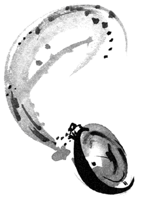
流行
――自分スタイル、見つけませんか？
綾乃さん（二十八歳）から電話があると、私はつい癖でメモ帳を 手 繰 り寄せてしまう。
大手建設会社で一般職ＯＬをしている彼女は、自他共に認める流行ツウだった。雑誌やテレビで紹介された場所を彼女に問えば「ああ、西麻布の○○ ね。味はまあまあだけど、値段が高め」だの「青山の○○ は新宿本店のほうがダンゼン美味しい」などと、必ずと言っていいほど即答が得られたものだ。
仕事柄、最新情報を押さえておきたい私にとって、彼女から語られる流行にまつわる情報は、メモりたくなるほど貴重だったわけだ。
彼女は、人気の場所だけでなくファッションやメイクも、もちろん流行を追っていた。
一年ほど前、取材ではじめて向き合ったときも（ちなみに彼女は、当時大人気だった原宿のオープンカフェを取材場所に「逆指名」）、現れた彼女のファッションは、胸元にししゅうを施したキャミソールに、デニム地のジャケット、黒のロングスカートと 完 璧 なコーディネート。指先のネイルアートも、カリスマ美容師に切ってもらったという 藤 原 紀 香 風の髪型も、まさにファッション雑誌から抜け出してきたみたいだった。
しかし、私は意外な事実に気がついた。事実、というには大げさかもしれないが、取材が一段落して化粧室に立った帰り、私は一瞬戻る席を迷ってしまったのだ。彼女の背中を探すものの、似た後ろ姿がごろごろ。見分けがつかない......。
場所は最先端のカフェだ。集まる客も、店に負けないほどのモード（流行）系である。同じような髪型とファッションをした女性の中で、綾乃さんは完璧に埋もれていたのだ。
綾乃さんが、流行を強く意識しはじめたのは、約一年半ほど前からだという。これは彼女が彼氏と別れた時期と重なっていた。
二歳年上の元彼は、とてもやさしい人で、二年間にわたって綾乃さんだけを見つめてくれた。「死んでも綾乃を守る」と、くすぐったくなるセリフを連日連夜、投げかけたことからも、彼のゾッコンぶりが 窺 える。彼女は彼の腕の中で、愛される自分を実感していたそうだ。
ところが、その彼に好きな女性ができてしまったのだ。彼はやさしさ（ズルさ、とも言うな）ゆえに、綾乃さんに事実を告げられず、しばらく 二 股 交際を続けていたという。が、このことが、結果的に綾乃さんを苦しめた。
女のカンは鋭い。疑いを持った綾乃さんは、彼が自分よりずっと若い女性に夢中になっている事実を、彼の行動や言い訳から、自分で暴くことになってしまったのだ。
その頃からだという。彼女が流行に夢中になりはじめたのは。
「もっとイイ女になって、彼を見返してやろうと思ったんだ」
綾乃さんは別れの 顛 末 を話し終えると、そう付け足した。もちろん、彼女の言葉に 嘘 はないと思う。だが、うがった見方かもしれないが、その裏には、流行を取り込むことで、自分自身をガードしたいという思いも働いていたのではないだろうか。
元彼の愛情は、彼女にとって女の自信につながったと思う。愛されている自信は、カシミアのコートのように、綾乃さんをやさしく包んでいたに違いない。
しかし愛されなくなった彼女は、女の自信という着心地のいいコートを一気に 剥 がされた。
譬 えるなら、真冬に突然、裸で放り出されたようなものである。そんな彼女は、寒さをガードするために、何かを求めた。
品薄のレアなバッグを手に入れた話や、トレンドのスポットに行った話をするとき、誰もが得意顔になるものだ。それは、聞き手の 眼 差 しが 羨 望 を含んでいるからだろう。
自信を失った綾乃さんは、欲しかったのではないだろうか。彼氏の熱い視線に代わる、誰かの視線が......。時代の最先端をいくことは、彼女にとって、もっとも手っ取り早い、自信回復への近道だったように思うのだ。
その綾乃さんと久々に会ったのは、つい最近のことだ。場所は当時オープンしたばかりの、お台場のヴィーナスフォート。ここを指定したのは、彼女、ではなく、実は私だった。
待ち合わせ場所のインフォメーションカウンター前で、私は「流行づくし」の彼女を待った。ところが登場した彼女はシンプルなモスグリーンのアンサンブル姿。メイクも、ブラウンのアイシャドーに赤い口紅と、コンサバ系（保守的）。
拍子抜けするほど流行づくしには程遠かったのだ。
さては新しい彼氏の趣味か？
私は、いぶかったものの、彼女のイメチェン理由は、近況の変化にあった。
綾乃さんはカラーリストを目指して、専門学校に通いはじめていたのだ。
モスグリーンの服も、ゴールドベースの赤い口紅も自分のベストカラーと知ってのコーディネートだったわけだ。しかし、似合う色を知ったと同時に、彼女は大ショックを受けたという。今まで流行に乗って買い込んできた品々が、見事に似合わない色だったからだ。タンスの肥やしの大量発生に、彼女はしばらく 凹 んだそうだ。
「もう流行は追ってられないわ！」
綾乃さんは、笑いながら流行への決別宣言を口にした。もちろん、こうは言っても、彼女はお年頃の女性である。今後も流行をチェックしていくだろう。
が、チェックしつつも、これまでと違って、流行と上手に距離をとっていくのではないだろうか。
自分のカラーを見つけたように、専門学校の扉をたたいた綾乃さんは、自分のライフスタイルを見つけつつある。そんな彼女なら、きっと次々に発信される流行の中から、自分にとって必要なものと、不要なものをきちんと分けられると思うのだ。
そして何より、自分の方向が見えてきた彼女は、彼との別れで失った自信を、自力で回復している。もう、 闇 雲 に流行をまとって、人の視線を集める必要もなくなっただろう。
休日のヴィーナスフォートは女性たちで混み合っていた。でも、どこにいても綾乃さんの姿を見つけることができた。流行で身を固めていた、あの頃よりもずっと。
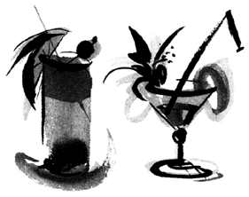
キレイ
――〝 らしさ〟 を忘れていませんか？
ライターという仕事柄、多くの女性に取材をしているが、以前、キレイが「売り」の女性たちに話を聞く機会があった。
女性誌の美容特集だったのだが、集まった女性たちは自他ともに認める「コスメフリーク」さん。
化粧品の知識は海よりも深く「○○ の×× は超おすすめ」と、次々に飛び出す情報は、まさにカルト級だった。
しかもコスメフリークさんは、化粧品オタクだけにとどまらない。
メイクテクニックも 玄人 はだしで、 完 璧 な化粧でキレイを手に入れていたのだ。
「すんごい、キレイだったね」
私はフリークさんたちを見送り、担当編集者にため息ともつかぬ感想を漏らしたほどだった。
しかし、この話には後日談があるのだ。
彼女たちの記事は、雑誌に写真入りで紹介する予定だった。
ところが数日後、カメラマンから届いた写真を仕分けながら、私は青くなってしまったのだ。八枚のフリークさんの写真を並べてみると、誰が誰だかわからない。そう、顔と名前がほとんど一致しなかったのだ。
たった数日前の取材なのに、それも二時間も話を聞かせてもらったのに、である。
私は健忘症になったかも、とマジであせったほどだった。しかし......。
「ヒャー、似てるぅ」
編集者の驚く声に改めて写真を見ると納得。フリークさんたちは、弓型 眉 に、パールのアイシャドー、グロスがきいた唇に、シャギーの入った髪......。みんな〝 おそろい〟 だったのだ。
パフィーのアミちゃんとユミちゃんの区別が難しいのに近い感覚だろうか。実物では何となく区別できても、写真ではどっちがどっち？ となってしまったのだ。
私と編集者は必死で記憶をたどり、写真に名前をつけつつ、つぶやいた。
流行のメイクで素顔を覆い、似たヘアスタイルをもつ彼女たちは、同じレベルの美女に仕上がってしまうのかもと。
そして、コスメフリークという同じ枠に属し、キレイになることだけにエネルギーを注ぐ彼女たちは、生き方までも〝 類似品〟 だから、まるで長年連れ添った夫婦のように、顔まで似てくるのかもと。
ところで私は、最近これと似た雰囲気をかもし出す写真を見たことがある。
ほかでもない、自分の写真である。
先日、一通の封筒が届いた。ずいぶん前にお世話になっていた、お見合いオバサンからだった。短い手紙には「資料の整理をしていたら 貴女 の写真が出てきたので返却します」と記されていた。
封筒には手紙とともに、当時お見合い用に 撮 ったスナップ写真が何枚か入っていた。
あの頃二十九歳だった私は、ピンクのルージュをつけて、髪を伸ばし、白いワンピース姿で 微 笑 んでいる。
今よりずっと若く、自分で言うのも何だが、今よりは美しい私が、そこにいた。
しかし私は写真を見ながら思った。若かりし自分に、いちゃもんをつける気はないけれど、なんだか「らしくない」写真だと。
「私って性格よくてバッチリいい奥さんになりますぅ」と、男ウケする光線を発している。当時の結婚観がそのまま凝縮された写真、だったのだ。
思い返せば、その頃の私は、フリーアナウンサーとして年齢に限界を感じ、友達は三十歳前の結婚ラッシュでバタバタとゴールイン、同居中の親は顔を合わせれば嫁に行け攻撃と、悪条件がこれでもかの勢いで重なりまくっていた。
八方ふさがりだった私は寝てもさめても不安だった。そして不安解消のためには結婚するのが一番と、結婚までの最短コース、見合いに打って出たのである。
媚 びた写真にも象徴されるように、当時の私は、見た目にこだわった。
コスメフリークではなかったが、「若さフリーク」だった。
風 呂 に入ればヨーグルトを塗りたくってラップでパック。風呂上がりはせっせと顔のマッサージに燃え、手鏡を片手に小ジワのチェックに余念がなかった。
二十九歳、結婚をすべての 拠 り 所 にしていた私は、下り坂とはいえ若さを「売り」にするしかなかった。
そう、まるで旬の終わりかけている果実を、派手なラッピングでごまかして高く売ろうとしているようなものだったのだ。
しかし、成果は......。
うそ臭い笑顔で見合い相手と向き合っても、妙にイライラ。見合い相手の没個性にも、ますますイライラ。私は見合いから帰ってきては、我慢していたタバコをスパスパ吸いながら、ようやく自分らしさを取り戻すありさまだった。
こんな調子なので、十数人と会っても話はまとまらず、結局、私は三十歳の誕生日を一人で迎えた。
やがて、思った。無理やり二人になって自分らしさを失うより、一人でいようと。
その後、私は見合いから足を洗っている。
見合いを卒業してから、若さフリークからも卒業したように思う。もちろん年齢より若く見られればうれしい。が、昔のように過剰な執着はまったくない。
と同時に、キレイへの認識も変わった。
私は三十歳を機にアナウンサーからライターに転職した。年齢を気にせず、一生関わっていける仕事として選んだ道だが、この業界に入ってからキレイと思える女性といえば......。
たとえば、雑誌の撮影現場の女性。こう書くとキレイの的はモデルさん、と思われるだろうが、少し違う。確かにモデルさんは完璧な容姿とスタイルをもっている。肌も美しい。
だがモデルに負けないキレイを誇っているのは、現場の女性スタッフたちなのだ。
スタイリスト、メイクアップ・アーティスト、カメラマンのアシスタント。裏方の彼女たちは現場ではほとんどスッピンだ。服装だってＴシャツにパンツがスタンダード。飾り気など、まったくない。
しかし、数十着の衣装を、米俵を担ぐように運び入れるスタイリストさんの力強さ、モデルさんを美しく仕上げていくメイクさんの真剣な横顔、時には床を 這 いずり機敏に動くカメラマンのアシスタント。
プロとして最高の仕事をしようと汗を流す彼女たちの姿は、モデルさんがかすむほど魅力的なのだ。
撮影は深夜まで及ぶこともザラだ。日付が変わる頃、疲れはピークに達する。肌はボロボロ、目尻には小ジワがチリチリとより、目の下のクマも深くなっている。
だが仕事が終わり、「お疲れさま」と、肩をトントンやりながら仕事場を後にする彼女たちは、文句なく、いい顔、してる。キレイなのだ。
なぜ、彼女たちにキレイを感じたのだろう。
私は彼女たちと個人的な交流はないので、プライベートはまったく知らない。
今、恋愛でハッピーなのか、結婚生活がうまくいってるのか、輝きにまつわる情報はない。そんな私が彼女たちに 魅 かれた理由は、ただ一つ。
仕事に取り組む彼女たちの姿に、とびきりの個性を感じたからだ。人と横並びではない、自分のカラーをもつ彼女たちは、外見が美人とか不美人とか別にして、その存在自体が光っていたのだ。
もし彼女たちを、コスメフリークさんたちのように、短い接触の後、写真で並べてみたら......。たやすく顔と名前が線で結べたのではないだろうか。間違っても、名前探しに四苦八苦ということにはならないと思うのだ。
私は見合いしていた当時、誰かに人生を 委 ねようと考えた。個としての自分がどうあるべきかより、少しでもみんなと同じ幸せに近づこうと必死だったのだ。だから、一般的な幸せをつかむため、キレイを磨いた。
しかし私はキレイだったのだろうか。「らしくない」当時の見合い写真が物語るように、うつろな生き方を、流行のメイクでごまかしても、そこに本当のキレイは存在していなかったと思う。いい顔とは、程遠かったように感じるのだ。
外見のキレイは、サッカーでいうならサポーター、アメフトでいえばチアガールのようなものではないだろうか。
スタンドで応援の旗は振るが、役目はそこまで。グラウンドで試合をするのは、ほかでもない自分なのだから。
そして人生というグラウンドで、どんな試合をするかで「キレイ」は最強の応援部隊にもなれば、そっぽを向いたりもすると思うのだ。
プライド
――自分の生き方に誇りを持つことができますか？
かれこれ十年ほど前の話になるが、私は二十五歳の頃、一時ＯＬをしていたことがある。
もともと、日産ミス・フェアレディという企業付きのコンパニオンをしていた私は、契約終了後、自然の流れでフリーアナウンサーになった。ところが一向に仕事には恵まれず、開店休業の日々。そこで、安定した収入を求めて、ＯＬに転職したわけだ。
就職先は、大手信販会社で、私はデパートのクレジットカウンターに配属された。これまでモーターショーなどの華やかなステージと、派手な衣装が定番だった私にとって、新しくあてがわれた、ちっぽけなカウンターと紺色の制服は、かなり違和感があった。
けれど、仕事にはすぐ慣れたし、人間関係もよかったので、とりあえず「つなぎ」のつもりで、仕事を続けようと考えていた。
ところが、ある日、事件が起きた。事の発端は、四十代のマダム風女性の来店にはじまる。
彼女の目的は、デパートオリジナルのクレジットカードの申し込みだった。そのカードは簡単な審査に通れば、小一時間で発行できる 類 いのものである。しかし、コンピュータで彼女の過去のクレジット利用状況を照合したところ、遅延が目立ち、とてもカードを発行できる状態ではなかったのだ。
カードを受け取りに再び来店したマダムに、私はその旨を告げた。すると、マダムは突然、「失礼な！」と叫び、すごい剣幕で怒り出したのだ。驚いた私は、おろおろと経緯を説明したが、「勝手に調べて失礼な！」とますます怒る。仕舞いには、「いらないわよ、こんなもん！」と、私の鼻先で申し込み用紙をビリビリに破き、 花 吹 雪 みたいに散らして帰ってしまったのだ。しかも、騒動はこれで収まらなかった。ほどなく支店の主任が血相を変えて飛んできた。聞けば、マダムがデパートの顧客担当者に電話して怒りをぶちまけたというではないか。彼女の話によると、窓口の女（私）が、失礼きわまりない態度をとったことになっていたらしい。
状況を説明すると、主任は私の肩を持ってくれた。けれど、謝罪して丸く収めようと提案してきた。気が進まなかったが、私は主任とともにマダムの自宅に向かった。
玄関で待ち構えていたマダムは、菓子折を差し出す主任に「部下の教育がなってない！」と再び怒りの 牙 を 剥 いた。私は頭を下げながらも、主任の反撃を 密 かに期待した。だが、主任は反論するどころか、すっと 膝 を折ると、玄関の 三 和 土 に頭をこすりつけるではないか。
土下座、である。信じられなかった。しかも、主任は「おまえも、やるんだよ」と横目で促す。もちろん私は 躊 躇 したが、無言の重圧に促されるように、仕方なく同じ体勢をとることになった。
土下座が効いたのか、マダムの機嫌は直った。が、逆に私の怒りは沸点に達していた。
帰りに立ち寄った喫茶店で、遅い夕食を食べながら、主任は「土下座なんてラジオ体操みたいなもんだよ」と私を慰めた。納得いかないままドリアを食べていた私は、その言葉に反応するようにフォークを 叩 きつけて叫んでいた。「私はプライドがズタズタです！」と。
しかし、今振り返ると見えてくるのだ。私が主張したプライドの種類が......。
かつて、女友達が、彼氏と別れたときに「プライド」という言葉を口にした。
彼女は二十八歳から丸三年間、彼氏一筋でつきあってきた。だが、彼のスタンスは若干違った。甘いマスクとやさしい性格を持った彼は、女性によくモテた。そのせいで、時折浮気が見つかっては、彼女と大ゲンカになっていた。
「あんな優柔不断な男、やめれば」
口の悪い仲間は、彼女に耳打ちしていたものだ。その二人が、別れることになったのは、やはり彼氏の女性問題が原因だった。「今回ばかりは浮気ではなく本気になってしまった」と、彼が彼女に別れを切り出したのだ。
一人に戻った彼女を囲んだ夜、私も他の女友達も彼のことをボロクソにけなした。
しかし、彼女は恨み言をいっさい口にしなかった。その代わりにポツリと言ったのだ。
「彼との歴史は、私のプライドだから」と。
彼女の横顔は場違いなほど誇らしく見えた。
彼女は「男」で、私は「仕事」で、ともに落ち込んだ場面で発した「プライド」という言葉が、違うニュアンスを持ったのはなぜだろう。
彼女が別れた彼氏は、確かに優柔不断で女癖も悪かった。しかし、彼女は欠点も含めて、彼を愛し、彼との恋愛を貫いている。誰が何と言おうと彼女にとって彼は、自分が選んだ「一番の男」だったのだ。
だからこそ、結果はどうあれ、二人で紡いだ日々を、彼女は誇りをもって、プライドと言えたのだと思う。
一方の私は、フリーアナウンサーとして仕事に行きづまり、逃げ場を探して転職した。そんな私は仕事を「つなぎ」と考え、「昔は華やかなミス・フェアレディだったのに」などという安っぽい自尊心まで引きずっていた。だから、土下座によってプライドが一気に撃沈。 激 昂 した。言い換えれば、もし私があの仕事を自分から選びとっていたら、土下座した自分に卑屈になるどころか、顧客とのトラブルを体を張って回避したことに、胸を張れたと思うのだ。
プライドは、恋愛や仕事を、支えてくれる大切な感情だ。が、扱い方次第でリバーシブルコートのように色合いを変えるものでもある。
「好きだから、気持ちを素直に伝える（のが私のプライド）」
「好きだけど、（プライドがあるから）自分からは伝えない」
どちらも「プライド」が言わせた言葉なのに、このように関わり方で展開が変わるわけだ。
「伝える」と、気持ちに素直に動けば「笑顔」か「涙」、白か黒の結末が待っている。逆に「伝えない」と、意地を張れば、少なくとも泣かずに済む。
プライドを、どう使うかは自分の気持ち一つなのだ。ただ、忘れずにいたい。
プライドは「高さ」を競うものではなく、自分の行動や選択を愛するための「誇り」だということを。
女友達
――幸せをいっしょに喜べますか？
三十代も中盤を越えた今、女友達の顔ぶれはすっかり定着している。
のっけから、こんなことを書くのは、二十代中盤から後半にさしかかった頃、いっしょに遊び、相談ごとを持ちかける女友達が短いサイクルで入れ代わったからだ。なぜ、大切な友達が「日替り定食」のごとくチェンジしたのか......。その理由は他でもない結婚問題が絡んでのことだった。
彼氏ができると、女友達はめっきりつきあいが悪くなった。優先順位は彼氏が一番、女友達は二番。たとえ電話で女同士が盛り上がっていても、彼からキャッチホンが入れば、彼女はソワソワ。私はお役ごめんとばかりに受話器を置かねばならなかった。そして、彼氏を優先させる女友達から珍しく電話があれば、お決まりの結婚報告である。
「おめでとう！ よかったじゃん」
そんなとき、私は大げさに祝福した。しかし、本音を言えば内心は複雑だった。彼氏がいるいないで、私とのつきあい方を変える女友達の態度に納得ができなかった。それに何より、当時二十代だった私にとって結婚は幸せの象徴。自分より先に幸せをつかむ女友達に強い 嫉 妬 を感じていた。だから素直に喜べなかったのかもしれない。いずれにしても、結婚を境に女友達との距離はさらに広がり、私は欠けた友を埋めるように新しい女友達を求めていった。友達を選ぶ基準はとりたててなかった。なぜなら、女同士の友情なんて、どうせ男によって左右されるレベル。しょせん「セカンド」だと思っていたからだ。
ところが、ある出来事が私の結論に疑問符を投げた。数年前......私が見合いにうんざりしていた頃だから、三十歳くらいのときだったろうか。
中学時代の友人と再会する機会をもったのだ。彼女とは親友と言える仲だったが、御多分にもれず結婚を境に疎遠になっていた。ところが、出産のため実家に帰っているから久しぶりに会いたい、と彼女から連絡が入ったのだ。正直言って 億 劫 だった。働く私と専業主婦の彼女とでは話題が 噛 み合うはずもない。今さら結婚生活のノロケも聞きたくない。しかも私をセカンドに落とした彼女には友情も薄れ、久々の再会に心が躍ることもなかった。
が、断る理由も見つからず、私は重い腰を上げて、彼女の実家を訪れたのだった。久しぶりに会った彼女はすっかり 迫 り出したお 腹 を抱え、笑顔で迎えてくれた。前より幾分ふくよかになっていたが、笑うと 目 尻 が下がるところなど昔のままだ。
結婚前に彼女が使っていた子供部屋で、私たちは向き合った。とたんに、なつかしさが 甦 った。しかしケーキなどつつきながら互いの近況に触れ合うものの、今いち相手に踏み込めない。彼女が語るラマーズ法の話には私が、私が語る仕事の苦労話には彼女が、ともに「大変ねえ」と短いリアクション。話せば話すほど「別世界の私たち」を露呈する結果になっていったのだ。こんな調子なので、話はいっこうに盛り上がらず、もはや私たちは昔話にすがるしかなかった。すがりながら私は、早くもおいとまのタイミングをうかがっていたほどだ。しかし、彼女がぽつりと言った言葉に、私は浮かしかけた腰をあわてて戻していた。
「私が結婚報告したとき、どう思った？」
何気ない彼女のつぶやきだが、短いイントロで私は彼女がどの話を言っているのか察知できた。「実は結婚することになったの」「へー、おめでとう」。あのとき、あの電話でのやりとりを巻き戻しているのだ。彼女は「今だから話せる」と笑って結婚までのエピソードを語ったが、話を聞き終えて私は思った。あの一本の電話が、私たちの仲を左右する 鍵 になったのだと。
結婚する彼女は幸せの絶頂にいるはず。私はそう思い込んでいたが、彼女は悩んだ末に結婚を決めていたのだ。恋愛中に彼氏との価値観の違いを痛感したり、彼の浮気で修羅場を迎えたり、また彼の転勤が多いことも一人娘の彼女にとって親の反対を買った。そう、彼女は逆風にあおられながら、ようやく結婚への意思を固めていたのだ。その上、結婚が決まれば現実が見えてくる。彼の両親や 親 戚 との面倒なつきあい、社宅の人間関係に、慣れない家事など、シングル時代より取り巻く環境はシビアだ。そんな中、不安を抱えた彼女は、私に結婚報告をするとき、期待していたのだ、背中を押してくれる励ましの言葉を。ところが私といえば、口先だけのおめでとうを言った後、社宅の間取りや披露宴の人数を 小 姑 のように聞くありさま。私はネガティブな要素を一つでも見つけて、 妬 む気持ちの 帳 尻 を合わせようとしたのだ。彼女は敏感にキャッチしていた。友達だと信じてきた私が、実は自分の幸せを心から願っていないことを......。
女同士の場合、不幸なときには互いにいたわり合える。「彼氏と別れた」なんて泣きが入れば一晩中でもつきあえるものだ。もちろんこれも友情だと思う。が、どうだろう。一方が幸せになったときにこそ、もう一方の度量が試されるのではないだろうか。相手の幸せを心から喜べる本当の女友達か、人の幸福を妬むエセ女友達か。
そう考えると彼女の結婚報告は、友情を調べる「リトマス試験紙」だったように思うのだ。
そして検査の結果は......。
私は彼女が結婚によって距離を置くようになったと思っていたが、実は友達判断の場面で私は不合格になった。だから、彼女は私を「セカンド」に降格させたのだろう。
二十代、私の幸せのベクトルはすべて結婚に向いていた。人と同じ幸せを手にすれば自分も必ず幸せになれると信じていた。そんな私は女友達が結婚するたびに、妬みが先に立った。とても幸せをいっしょに喜ぶ心の広さはなく、私は彼女たちから遠ざかった。そして、自分と同じ立場の女性と新しい輪を作った。
しかし、新たな交友関係も相手に彼氏ができたり、結婚が決まると同じプロセスをたどった。この繰り返しだったのだ。
そんな状態にピリオドが打てたのは三十代に入ってからだ。自分にとっての幸せが結婚だけではない、そう強がらずに言えるようになった頃、ようやく友達の幸せを素直に受け入れられるようになった。人と自分の幸せを比べなくなってから、代理がきく「親友ごっこ」の関係からも卒業できたように思う。
再会から二週間後、彼女は無事に女の子を出産した。いっしょに新生児室を 覗 きながら、今度こそ心から言えた。「おめでとう」と。
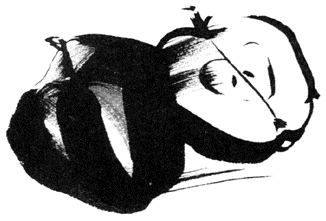
母と娘
――親との「自立した関係」築きませんか？
これだけ女性の晩婚化が進むと、働くシングル人口は増える一方である。と、同時に注目したいのが親と同居のまま暮らす女性の増加だ。私が取材した中でも、幼い頃にあてがわれた「子供部屋」に住み続ける二十代から三十代の女性は、過半数に及んでいる。
実は私もその一人なのだが、そんな私たち実家組を総称するネーミングがあるという。『パラサイト・シングル』が、それである。コレ、直訳すると、寄生する独身者、となる。結婚しないで実家に暮らすシングルを、寄生虫あつかいするとは！ 私ははじめてこの言葉を聞いたとき、いたく腹を立てたものだ。が、冷静に自分の生活を振り返れば......。
今でこそ、家にきちんと生活費を入れているが、二十代の私は不安定な収入を理由に、家にお金を入れたり入れなかったり。そのくせ肩身を狭くするどころか、堂々と冷蔵庫のものは食べ放題。風呂も、エアコンも、電話も使い放題と、実家の 旨 みを吸い尽くしていた。そう、紛れもなく実家パラサイトだったのだ。
けれど遠慮なく飲み食いしつつも、お気楽一筋にはいかない。二十代も後半に入れば、親（特に母親）からの結婚プレッシャーは日を追って過熱するし、三十歳のカウントダウンが聞こえてくる頃には、顔を合わせれば「結婚しなさい」、「ほっといてよ」と母娘で火花を散らす日々が続いた。だから私にとって実家は、経済的には助かるけれど、精神的にはキツイ場所。パラサイトしつつも、どこか 喉 に小骨が刺さっている感じだったのだ。
ところが三十代に入ってから、小骨はゴクリと喉を通過していった。これには、母の変化が大きく関与している。あんなに「結婚！」を連呼していた母が「今は晩婚の時代だから」と娘のフォローに回ったのだ。そして、口だけでなく母は態度も変えていった。
当時、ライターに転職したばかりの私は、アシスタントとして昼も夜もない生活を送っていた。威張れる話ではないが、三日も風呂に入らないことだって珍しくなかった。そんな私に母はせっせと食事を作り、洗濯、掃除と身の回りの世話を焼いてくれた。そう、まるで〝 奥さん〟 のように。
母の変化は還暦を過ぎた頃に起こっている。娘なりに勝手な分析をさせてもらえば、人生の終盤を迎えつつあるものの、母はまだまだ元気である。だからこそ、何かで生き 甲 斐 を感じたかった。そこに嫁に行かない娘がいたら......。
母は私の世話を焼くことで、アイデンティティーの確認をしていたのかもしれない。
当初、私はそんな母の変化に 戸 惑 った。けれど、すぐに受け入れてしまった。理由はひとつ。母の〝 奥さん化〟 による私のメリットが大きかったからだ。
しかし、ある一件で私はこの状態に不安を抱いた。
数年前のこと。母が庭のちょっとした段差につまずいて転び、 肘 を複雑骨折したのだ。何でここでコケる？ と首を 傾 げる場所で転んだことにも、コケただけで手術が必要な 大 怪 我 になってしまったことにも、私は母の老いを実感した。最も老いを痛感したのは、ほかでもない母自身のようだった。入院待ちの一週間、母は情緒不安定になった。頭も洗えない、トイレでパンツを上げるのも一苦労。寝たきりのお年寄りみたいになった体を持て余し、時に涙すら流していたのだ。
間近で見ていた私は母の動揺に気づいていた。しかし、とてもケアできない。それどころか〝 奥さん〟 を失った私は、家事と仕事を抱えてストレスはピーク。「何で私がこんな目に」と母にカレーライスをよそいながら、被害者意識すら募らせていたのだ。
さらに、忘れてならない、もう一人の家族、父はといえば......。母にいたわりの言葉をかけるでもなく、しらーっと、われ関せずを決め込む始末だった。
「どうせ、母さんは厄介ものよ！」
私と父の冷たい態度に、母は涙声で叫んだ。
辛 気 くさい空気が家中を包んだ。ヒステリックな母の声をＢＧＭに、私は途方に暮れ、父は夕刊から目を上げようともしなかった。
生意気を言うようだが、一般的に子供が独立した後は、夫婦は再び二人に戻り、新たな関係を築くものではないだろうか。ところが我が家では私が残ってしまった。「かすがい」の子供が巣立たないものだから、母は 堅 物 の父と向き合う機会を逃し、同時に子離れのきっかけも失ってしまった。そして「 三 十 路 の子供」は、ちゃっかり親の恩恵にあずかった。
一家が永久に順風満帆なら、この状態でもなんとかなるだろう。だが、十年、二十年たったとき、私は四十代、五十代を迎え、親は七十代、八十代になる。歳を重ねた分、考えたくはないが親が不治の病にかかることも、ボケるなんてことも十分ありうる。そのとき、今のまま親に甘えていたら......。親が老いた分、そのツケは大きいのではないだろうか。
晩婚化が進んだ今、実家暮らしが長引くこともなきにしもあらず。しかし長期戦になった実家暮らしだからこそ、親との関係をきっちり見直すべきではないだろうか。私は母の一件でそう自分に問いかけるようになった。
それは親が老いたから距離を作って関わりを避ける、ということではない。逆に、親ともたれ合う関係を卒業することによって、いざというときに親としっかり向き合える〝 基礎体力〟 を養うという意味だ。
親と同居中の女性によれば、驚くことにその過半数が、家に生活費を一円も入れていなかった。
デパートに行けば母親が娘の服を買ってやる。レストランでは当然のようにママが伝票を担当する。会社に持っていくお弁当まで母親が作っているなんて話も聞こえてきた。
彼女たちの多くは「結婚まで......」を言い訳に実家で甘えを決め込んでいた。
実家暮らしの私は、頭から彼女たちの日常を否定する気にはなれない。しかし、子供時代の延長で実家にパラサイトしていたら......。
温床と化す実家は、自立を遅らせる最もリスキーな場所に姿を変える。このことは肝に銘じておきたいと思うのだ。
ひとり
――有意義な「ひとり時間」を過ごしませんか？
「彼氏が途切れない女だねえ」
二十代の頃、私は学生時代の女友達、貴子（仮名）を、そう言って冷やかしたものだ。
現在、貴子は三十代中盤でシングルだが、二十代の頃は「彼氏いない歴」を一度も経験したことがなかった。一つの恋愛が終わると、すぐに「次」を見つけラブラブモードに入っていたのだ。ところが恋愛の達人だった貴子は、二十九歳で二十代ラストの恋に幕を引いた後、まさかの冬枯れ状態に突入した。学生時代はもとよりＯＬになってからも、常に彼氏と「ふたり」だった貴子にとって、それはイコールはじめて経験する「ひとり」だったわけだ。
貴子は彼氏が途切れなかったことでもわかるように、男性が守りたくなるタイプだった。甘えん坊で、淋しがり屋だったのだ。そんな彼女にとって突然訪れたひとりの時間は、苦痛以外の何物でもなかったのだろう。この頃から彼女は、「ひとり」から逃げ出すように生活を変えている。
私たち学生時代の友達をはじめ、会社の同僚、はたまたお 稽 古 事 先で知り合った仲間の間を貴子は社交的に立ち回り、 貪 欲 にネットワークを広げていったのだ。その 甲 斐 あって、彼女はひとりの時間を回避した。彼氏がいない穴は、女友達によって埋まったわけだ。
しかし、しばらくすると貴子から「聞いて......」と泣きの電話が入るようになったのだ。
最初の「聞いて」は同僚とのいざこざが原因だった。なんでも仲のよい同僚数人と食事をした席でのこと。貴子はその場にいなかった女性の同僚にまつわる 噂 話 をした。その話が後日、 歪 んだ形で当人の耳に入り、誤解を生んでしまったというのだ。涙ながらに 顛 末 を話す彼女に私は同情した。
ところが、彼女の「聞いて」は、その後も頻繁に続いた。同僚とモメた彼女は、社交の場を習い事の仲間へと移したが、フラワー・アレンジメントの教室でも、日本舞踊の稽古先でも、仲間と次々にトラブルを起こしては、その輪から外れてしまったのだ。
そのたびに彼女は、言った覚えもない悪口の発信源にされただの、自分にまつわる悪い噂を流されただのと、涙を流した。私は話を聞きながら、やはり彼女を被害者と位置づけた。貴子の周りには、やけに嫌な女が多いな、と思いながら。
自分の考えが甘かったと気づいたのは、それからしばらくしてからだ。同僚や、お稽古仲間を失った彼女は、じきに私たち学生時代の友達に 矛 先 を向けたのだが、密着して 唖 然 とした。彼氏のいない貴子は人一倍、 嫉 妬 心の強い女になっていたのだ。
彼女は友達の誰かが幸運な転職を果たしたり、素敵な彼氏を見つけても、決して心から喜ぼうとはしなかった。それどころか幸せに水をさす言葉を、そっと耳打ちすることもあったのだ。彼女の冷めた一言は私にも及んだ。
当時、私は書きためたルポルタージュ原稿を念願の本として出版することを決めていた。その形は文庫書き下ろしでハードカバーの本に比べると派手さはないが、私としては苦労の結晶。幸せを 噛 み 締 めていた。その矢先だ。彼女の言葉が友達経由で耳に入ったのは。
「でも、文庫でしょ」
彼女は陰でそう言っていたそうだ。私はこれを聞いた瞬間、怒りよりも淋しい気持ちに打ちのめされてしまった。と同時に、 櫛 の歯が欠けるように彼女が仲間を失った理由にも合点がいった。淋しがり屋の貴子は、積極的に女友達と交友を深めたが、結局自らの手で、というより口で、信頼関係を壊していたわけだ。それは、女友達だけに限らないだろう。貴子は二十代では彼氏が途切れなかったほど恋多き女だった。なのに結婚に結びついていない。彼氏との間が壊れたのも、疎遠になった女友達と同様、本物の信頼関係が作れなかった証拠ではないだろうか。
なぜ、彼女は「薄い」人間関係しか築けなかったのだろう。
彼女が極端に避けたひとりの時間......ここにスポットを当てると、おぼろげに見えてくる。
確かにひとりの時間は、誰かと群れているときに比べ、孤独感が増す。面白味にも欠ける。が、私たちはこの時間を静かに受け入れている。それは、自分をニュートラルに戻し、じっくり自分と向き合える時間......言い換えれば、自分がどんなタイプの人間で、何に幸せを感じるか、その問いに答えを出す貴重な時間だと知っているからだ。
しかし、貴子は、この時間を避け続けた。自分と向き合うプロセスを 蹴 ってしまった彼女は、幸せの物差しがあやふやなまま、二十代を終えてしまったのかもしれない。彼女が仲間の幸せを 妬 んだのは、自分の幸せの針が何に振れるか 曖 昧 だったからではないだろうか。
あの頃から五年近くの歳月が流れたが、貴子は現在、映画配給会社に転職して、毎日を忙しく過ごしている。
友達とモメまくった当時のことを、彼女は多く語ろうとしないが、転職のきっかけに話が及んだとき、ポツリと口にしたものだ。
「あの頃は、ひとりで映画を 観 まくった」と。
そして、あの時間があったからこそ、思い切って転職を決意できたとも。
三十代中盤を迎えた彼女は、人間関係をシンプルに変えていた。仲間とのコミュニケーションも大事にするが、一方でひとりの時間も積極的に作っている。しかし、誰かと絶えず密着していた、あの頃よりもずっと、仲間が彼女を見る目は温かく、彼女も同じ「体温」で仲間たちに接している。
独り身、独りぼっち......「ひとり」という言葉は淋しさを連想させる。誰かと過ごす華やかな時間とは対照的だ。が、人との時間から得るものがあるように、ひとりの時間が教えてくれることも少なくない。旅行、食事......友達との予定を入れるように、ひとりの時間も堂々とスケジュール帳に組み込んでみたい。
「ひとり」を有意義に過ごせる人こそ「ふたり」や「みんな」の時間を心から楽しめると思うから。
三十代
――「平均値」にこだわっていませんか？
以前、ＯＬ関係の本を出版することになり、独身ＯＬ二十数名に話を聞いたことがある。彼女たちの年齢は二十代後半から三十代。私と同世代の、認めたくはないが俗に言うお 局 世代である。そんな彼女たちが語ったエピソードには、その年代特有のものがあった。
「個人面談の席、来年の結婚予定はないと言った途端、上司に『新陳代謝の意味を知っているか？』とマジで聞かれた」（商社・三十二歳）
「新年会で部長が私に 捧 げる曲だと『瀬戸の花嫁』を熱唱したときはハラワタが煮えくり返った」（メーカー・三十五歳）
「昭和五十年代生まれの新人登場で、痛いほど自分の年齢を感じた」（生保・三十四歳）
「廊下を 闊 歩 する後輩の集団に、思わず道を譲ってしまった......」（証券・三十三歳）
「年に数回しか歌わない社歌を空で歌える自分にゾッとした」（信販・三十四歳）
思い出すままに並べてみたが、彼女たちがジョークにすり替えた言葉の裏には、社内で取り残されることへの孤独がにじんでいたように思えた。
私のようにフリーだと、同期も上司もいない。たった一人、ワープロと向き合ってキーボードをたたく孤独な職場環境である。
それに対して会社という組織に属するＯＬたちは、同期に後輩、先輩と同僚がゴロゴロいる。一般的に見れば、孤独を感じにくい環境である。
だが、思う。ゴロゴロいる同僚は、横並びでいるときは、とっておきの安心感を与えてくれるが、寿退職だの昇進だのと仲間が自分より先に進めば、取り残された焦りは一気に募るのではないかと。そして組織という集団に属しているからこそ、横並びから外れてしまったときの孤独感はフリーの私の孤独とは比べものにならないのだろうと。
取材したＯＬたちは、二十代後半、特に二十九歳で、この横並びから外れた焦りを最も意識すると語った。その理由には同期の結婚が筆頭にあげられる。 櫛 の歯が欠けるように同期が寿退職していけば、見送る笑顔もこわばるというものだ。
とは言うものの彼女たち、独身のまま三十の壁を突破すると肩の力が抜ける、と感想を漏らす。三十を境に結婚ラッシュも一段落。親の結婚プレッシャーも沈静化。「三十までになんとか......」という 呪 縛 からも「なんともならなかった」ことで解放される。つき物が落ちたように楽になるという。
ところが楽になったはずの三十代ＯＬが再び孤独を感じる場面に出くわすというのだ。
二十代後半の孤独を第一期とすれば、これは第二期の孤独といえる。この三十代の孤独感とやらが、なかなかやっかいなのである。
あるＯＬ（三十五歳）は取材の席で、こんな話を聞かせてくれた。
何でも彼女が左手首に包帯を巻いて出社したときのこと。社内では彼女が手首を切って自殺未遂をしたという 噂 で持ち切りになったとか。もちろん彼女はやっていない。庭の草むしりでかぶれてしまった手首を治療していただけなのだ。根も葉もない噂を流された彼女は包帯をほどいて、課の同僚たちに「実はね......」と言い訳して回らなければならなかったという。
一方、友人のＯＬ（三十三歳）からは、こんな話が聞こえてきた。
レストランで一人の夕食をとっていると、周囲の目が気になってしまうというのだ。「自分が孤独な女に見られていないか心配で」というのが、その理由である。彼女は赤ワインとシステム手帳を小道具に、見ず知らずの客の前で「仕事ができるイイ女」を演じてしまうそうだ。淋しい女の一人ディナーに見られてたまるか、と 躍 起 になって。
もし、手首に包帯を巻いていたのが、三十代の未婚ＯＬではなく、子持ちの主婦ＯＬだったら、自殺未遂の噂は流れただろうか。
同様に、一人で店に入ったのが三十代ＯＬではなく二十代前半のＯＬだったら、若いＯＬは孤独に見られるのを気にしただろうか。
どちらも答えは Ｎ Ｏ だと思うのだ。
独身ＯＬにまつわる二つの話。こんな話からは「三十代の独身女性は孤独なはず」という世間の決めつけと、「孤独に見られているのでは」と世間の目を憂えるシングルたちの姿が見えてくる。
これが、三十代を第二期の孤独へいざなう呼び水になっているように思えるのだ。
私たち三十代はバブル全盛期に二十代を過ごしている。生きのいい足取りで社内を闊歩し、『 Ｈａｎａｋｏ 』片手にグルメにも走った。海外旅行に飛んでは、働く自分へのごほうびにブランド品も手に入れた。競馬にゴルフ、赤ちょうちんと女性が立ち入りにくい場所にも進出した。女ということにこだわらず、仕事と遊びを 謳 歌 することに目覚めた最初の世代といえるのかもしれない。
しかし反面、私たちは「結婚こそが女の幸せ」と刷り込まれて育ってきた世代でもある。
だからこそ、あっけらかんと笑いつつも、結婚していない今の状況が 完 璧 でないと思ってしまう。保守的な考えを無視できないから、平均から外れた今の立場に不安を抱く。時に、どっぷりと孤独にひたってしまう。
だがどうだろう。私たちは今、本当に孤独な状況なのだろうか。
私たちは衰えつつあるものの、体も心もまだまだ元気だ。夫や子供というカセがない分、時間と収入のほとんどを自分のためだけに使えるから、仕事にも集中できるし、趣味にも没頭できる。シングルの友達と気ままに旅行も楽しめる。ミセスが 羨 むシングルならではのメリットは数え切れないほどある。決して悪くない日常だと思うのだ。
そんな中、三十代・独身・孤独という三点セットの固定概念を気にして、うつむいてしまったら......。そして孤独に見られてなるものかと、必死で 取 り 繕 うことに終始してしまったら......。せっかくの三十代を灰色に塗りつぶしてしまうように思えてならない。
友人のＯＬ（三十五歳）は忘年会の席、課長に年齢を聞かれ「百歳です」とあっけらかんと答え、アムロの曲を熱唱した。課長は 茫 然 自 失 だったが、同席していたお局予備軍たちからは 拍 手 喝 采 だったとか。
知人のＯＬ（三十三歳）は社内の一回りも年下の後輩と意気投合。しょっちゅう楽しげに映画や食事へと出かけているそうだ。取材したあるＯＬは「三十四歳の手習い」と照れながらも、社会人大学への入試を目指し受験勉強に燃えている。
彼女たちの話、結婚して子供がいて当然という年齢を考えれば、どれも平均からはそれている。しかし平均を気にせず、自分の道を自分のペースで歩いている彼女たちからは、不思議と孤独感は漂ってこない。
「三十代はこうあるべき」という呪縛に捕らわれないことが孤独を回避する近道ではないだろうか。
そう、孤独とは日本人が大好きな「平均値」とやらを気にしたときにストーカーのごとく襲ってくるものだと思うのだ。
相性
――どうしても合わない人と、どうつきあいますか？
先日、とある雑誌の編集部でのこと。知り合いのメイクアップ・アーティストが沈んだ顔で嘆いた。聞けば所属していた事務所を辞めたという。その事務所は彼女のような女性メイクさんばかりを集めた女所帯で、もちろん社長も三十代の女性だ。その女社長とソリが合わなかったらしい。
「傲慢で、儲け主義で、自己本位で......。あんなんで、よく社長が務まると思うわ」
彼女は頬を膨らませた。
私は彼女の話を聞いて、ひどい社長もいるもんだと、いっしょになって憤慨した。
ところが、別の編集部で会った別のメイクさんが、偶然にも同じ事務所に所属していたのだが、彼女の口から出た社長像がまったく違っていたのだ。
「腕は一流で、部下を大切にする尊敬すべき女性なのよ」
彼女は迷いもなく、こう言った。
同じ社長なのに、関わる相手によって、正反対の感想を持たれるのは......。相性が深く関わっているのだと、思えた一幕だった。
仕事関係で知り合った真弓さん（二十八歳）は、自動車販売会社の営業所で経理事務を担当している。彼女も同僚との相性で大きな悩みを抱えていた一人だ。
真弓さんが欠員補充のため、今の職場に異動になったのは一年ほど前。東京郊外にある営業所は所員二十名あまりの小さな所帯だ。
彼女が属する経理課には中年の課長と、先輩の独身女性（三十一歳）がいて、そこに真弓さんが加わる形だった。
課長は無口だが穏やかな人柄なので、真弓さんはすぐになじめた。が、三十一歳の先輩とは波長が合わないと、赴任早々に直感したという。
その先輩、とにかく自分が中心にいないと気がすまない。真弓さんの歓迎会でも所長の隣をすかさずキープ。上座で所員たちに笑顔を向けるその姿は女帝を連想させるほどだったとか。
しかし、真弓さんは仕事をいっしょにするうちに彼女の君臨する理由が、その人柄や仕事の有能さでないことに気づいた。入社以来、同じ営業所で経理を十年以上も担当する彼女は、所員の交通費の仮払いや、領収書を経費で落とすかどうかの判断を 概 ね握っていた。彼女の気持ち一つで結果が左右するものだから、営業マンたちはご機嫌を伺っていたわけだ。
陰の実権を握り、その上にあぐらをかく先輩に好感を持てるはずもない。真弓さんは自分の仕事をきっちりこなし、必要以上に先輩との関わりを避けた。ところがおべっか一つ言わない後輩に、先輩はヘソを曲げはじめた。何かにつけて真弓さんの 些 細 なミスを指摘するようになったのだ。
やがて 小 姑 みたいな注意はエスカレートしていった。理由は所長が仕事を敏速にこなす真弓さんを優秀と認めたからだ。この評価が面白くなかったのだろう。先輩はうっぷん晴らしに出たわけだ。注意は化粧の仕方からストッキングの色にまで及んだ。四六時中チェックの目を光らせる先輩に、真弓さんはもう爆発寸前。だが立場上、反撃できない。怒りを飲み込むしかなかったそうだ。とはいえ、ストレスは 澱 のように 溜 まっていたのだろう。ある日、先輩から受けた些細なことへの注意（書類をめくる音がうるさい）に、とうとうキレた。
「いい加減にしてくれませんか！」
真弓さんは先輩をまっすぐ見据えてきっぱり言った。まさかの反撃に先輩は一瞬ひるんだものの、すかさず切り返したという。「親切で言ってあげてるのに。いいわ、もう二度と注意しないから」と。
その後、先輩は真弓さんを完全に無視するようになった。何を聞いても「さあ......」だけ。小言もないが会話もなくなったわけだ。デスクを向き合わせた二人が一日中、目も合わさず、電話の取り次ぎ以外、言葉も交わさない状態が続けば......。寒々とした空気に包まれ、真弓さんのストレス指数が加速の一途をたどったのは言うまでもない。
この険悪ムード、ケンカが発端だったら、原因を解決して仲直りできたろう。が二人は波長が合わずに気持ちがすれ違った状態である。解決の糸口は簡単には見つからなかった。
真弓さんは当時、深夜の電話占いを利用しまくったという。一カ月の鑑定料が月に二万円を超えたエピソードからも、彼女の悩みの深さがうかがえた。しかし占いに大金を投じても事態は好転せず、真弓さんは本気で会社を辞めるしかないと考えはじめていたそうだ。
そんな矢先だ。ある事件が起きたのは。
先輩がまさかの入金忘れで、半月も所内の金庫に預かり金を寝かせる大チョンボ。これが月末に発覚して大事件になってしまったのだ。
日頃穏やかな課長も、このときばかりは激怒した。先輩は唇を 噛 みしめながら、お叱りを受けていたそうだ。真弓さんにとっては、してやったり。高みの見物である。ところが真弓さん、気づかなかった自分にも落度があると、先輩の横に並んで課長に深々と頭を下げているのだ。しかも彼女は、収支が合わない 出 納 帳を先輩と深夜までかかって直している。
先輩が真弓さんを夕食に誘ったのは、翌日のことだった。はじめて向き合った食事の席で、先輩は酒を飲みながら、自分が今、不倫で悩んでいることを打ち明けたという。真弓さんは、このときに思ったそうだ。先輩とは長いつきあいができそうだと。
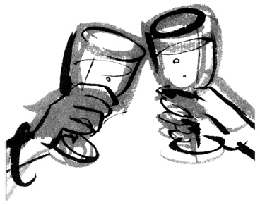
ノリが同じ、笑いのツボがいっしょ、考え方が似ている......同じ〝 周波数〟 の者同士は、努力しなくとも良質の関係が築ける。しかし、逆の場合、相性の悪さはどうカバーすればいいのだろうか。答えを導く方程式は簡単には見つからないが、一つ言えることは、相手に自分を「味方」と認識させることではないか。
人は自分のことを好きな相手を、決して嫌いになれない。「敵」に回さないからだ。
もちろん嫌いな相手にゴマをすってまで好かれたくない、という意見もあるだろう。私も同意見だ。が、こうは考えられないだろうか。
嫌いな相手にも必ず一つか二つは好きになれる部分があるはずだ。もし、そこを目ざとく見つけられたら......。自分の気持ちを偽ることなく、相手を認められると思うのだ。
そして、この習慣を身につけられれば、社内での人間関係はもとより、恋愛関係、友人関係、家族関係......、どの組み合わせでも相性の壁を乗り越えられると思うのだ。
仕事
――私生活との切り替え、できていますか？
短大時代のことだから、もう十数年前の話になるが、当時私はアルバイトに明け暮れていた。ウエートレス、ハンバーガーショップの店員、ビラ配りと、かじった数は両手では足りないだろう。
その中でもっとも印象に残っているのが、ＯＬもどきをしたアルバイトである。ひょんなことから、しばらく小さな不動産屋でお手伝いをしていたのだが、ここでの人間模様、今でも忘れられないほど面白かったのだ。
その人間模様の主役ともいえるのが近藤さんという当時二十八歳の女性である。彼女は通称コンちゃんと同僚から呼ばれていたのだが、そのコンちゃん、とにかく仕事に不満たらたらだったのだ。
「どうして私ばっかり大変なのかしら。もう辞めたい！」
ランチタイム、喫茶店でナポリタンを食べながら、コンちゃんは 眉 間 にシワを寄せ、仕事の愚痴をこぼし続けた。一時までずっとだ。
確かに会社には女性が四人だけで（私を含め）、最年長の彼女は誰よりも仕事量が多かった。なにかにつけて上司にも頼られていた。だから愚痴りたい気持ちはわかるのだ。が、天井知らずで不満をぶつける彼女には、いささか閉口した。後輩たちは「辞めないでください」となだめていたが、ここまで愚痴るコンちゃんはもはや限界のはず。次に出勤する日はコンちゃんの送別会かも、と私は 密 かに思いながら出社していたものだ。
ところがコンちゃんは、ずっといた。
嵐のような電話にパニックになり、受話器を 叩 き置いて「もう辞めるっ」と叫んでも、残業が続き「ホントにもう辞めるから～」とゲッソリした顔で断言しても、彼女は辞表を書こうともしなかった。それどころか、有給で休んでいても夕方になると会社に電話をよこして、変わったことはないか、例の書類は部長決済を今日中に済ませるように......などと、後輩に指示を出していた。そう、まるで家を留守にしたお母さんのように......。
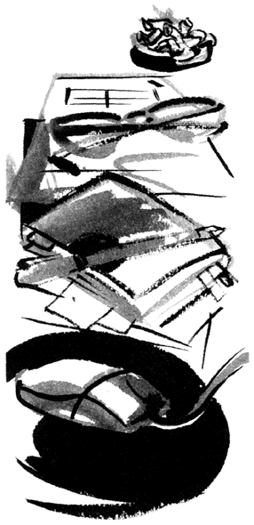
仕事に不満爆発。なのに仕事と密着した関係のコンちゃんに、私は首をひねった。
さて、そんな彼女の環境に変化が起きたのはしばらくたってからだ。
母親が病気で入院したため、コンちゃんの仕事に家事と看病が加わったのだ。
「先輩、これ以上、忙しくなったらストレスでパニックになるかも」
後輩たちは一様に不安な顔をした。
周囲の予想通り、確かにコンちゃんのスケジュールは過密になった。
夕方から病院に行く彼女は、残業ができない。その分、就業時間内の仕事は濃厚にならざるを得ない。電話の嵐に、次々と舞い込む伝票の山。私は隣で見ていて、いつコンちゃんがキレるか、「もうホントに辞める！」と、ツッカケ履きのままオフィスを飛び出していくか、気が気ではなかった。
ところが彼女は、母親の看病が生活に加わってから、仕事の不満を漏らすどころか、かえって楽しげに仕事をこなすようになったのだ。なぜだ？
当時の私は、矛盾しているコンちゃんの変化をまったく理解できなかった。が、今振り返ると、わかるような気がするのだ。
コンちゃんは仕事が不満と言いつつも、休みの日ですら会社に連絡を入れたほどだ。とても仕事に愛着があったのではないだろうか。
だが彼女は、オフィシャルとプライベートとの区切りがなかった。彼氏でもいれば別だろうが、彼女は仕事一色の人生。きっと家に帰っても仕事の進み具合、人間関係をあれこれ考えていたに違いない。つまり仕事と密着し過ぎたからこそ、煮詰まってしまったように思うのだ。
そんな日常を送っていた彼女は、母親の病気をきっかけに生活パターンを強制的に変えた。アフターファイブは必然的に病院と家事に追われることになった。彼女の中で、五時を境に公私の線引きがはっきりしたわけだ。
仕事だけに向いていたベクトルが、いくつもの方向に散った。その結果、仕事に適度の距離ができたのではないだろうか。
ケンカばかりしていたカップルが、適度に離れて互いのよさを見つめ直せるように、彼女も仕事との距離が生まれたことで、仕事の面白さを再認識できたのかもしれない。
自分の変化がうれしい誤算だったのは、多分コンちゃん自身だろう。その証拠に彼女は母親が退院後、看病に代わるアイテムを探している。母親の病気で食事の大切さを痛感したと、栄養学を学びに夜学の専門学校に通いはじめたのだ。
コンちゃんの辞書から「仕事、辞めたい」のフレーズはきっぱり消えた。
取材をしていると、女性の口から仕事の愚痴が出ることは少なくない。不満がたまっている女性も中にはいる。そんな彼女たちの特徴は、わがまま？ いや、逆なのだ。まじめで、責任感が強い。そして少し無器用。だからこそ、就業時間はもとより、アフターファイブも〝 仕事モード〟 を切り離せないのだ。その結果、ストレスがたまり、苦しくなるという悪循環をたどる。
ならば、仕事とどう関わればよいのだろう。
友人（三十二歳）はアパレルメーカーでＰＲ部に所属。有能なマネージャーとして過密スケジュールをこなす日々だ。普通なら、カリカリしてストレスもたまりそうである。ところが彼女は、いつも伸びやかなのだ。
彼女は常々、「趣味は料理」と言い切っていた。週に数回、専門家に料理を習いに行き、仕事が忙しいときでも、いや忙しいときほどキッチンに立つという。深夜に仕事から帰り、明け方までケーキを焼くこともあるそうだ。
「疲れない？」と私は質問したが、彼女からは「疲れが取れる」と逆の答えが返ってきた。
彼女の場合、仕事 一 途 にならないことで、かえって仕事の能率が上がっているようなのだ。
コンちゃんの例も重なるが、仕事上手は、切り替え上手といえないだろうか。仕事に時間を 割 けば、惜しみなくプライベートにも時間を割く。
働くときは思いきり働き、リラックスするときは思いきり手足を伸ばす。
割り切りのよさが、仕事と長く、しかも快適につきあうための 秘 訣 だと思うのだ。
買い物
――ストレス解消だけでいいの？
二十代のある時期、私はクレジット会社で働いていたことがある。期間はたった八カ月だったけれど、配属先がデパートのクレジットカウンターだったせいか、女性の買い物にまつわるドラマをいくつも見てきた。
その中でも忘れられないのが、二十五歳のあるシングル女性のことだ。
私の仕事はデパートで買い物した顧客にショッピングローンを組むのが主だったが、その女性との出会いもローンの申し込みからはじまった。
彼女は閉店間際の九時近くに、宝石売り場の店員とローンの申し込みにやってきた。見た感じ、地味な普通のお嬢さんである。恐らく購入した商品は三万円前後のアクセサリーリングあたりだろう。私はそう読んで申し込み用紙を広げた。
ところが介添え役の店員さんが書き込んだ金額は三十万円。商品はダイヤの指輪だったのだ。夜の九時に三十万円の指輪を、しかも普通のお嬢さんが買う？ 私は不謹慎ながら辺りを見渡して、〝 パパ〟 の存在を探したほどだった。
しかし、もちろん脂ぎった中年オヤジはいないし、書き込まれたデータにも、神奈川県在住、一人暮らし、二十五歳、中堅の食品メーカー勤務、と外見を裏切らない内容が記されていた。
ローンの審査も通り、彼女は三十万円の指輪を手に入れてカウンターを後にした。
地味な女性と豪華な宝石は、ミスマッチだったけれど、一世一代の買い物だったのかも。私と同僚は、そう納得して彼女を見送った。
ところが一世一代どころか、彼女は再三やってくるようになった。それも決まって閉店近くの時間にだ。そして七万円のスーツやら、ミンクの毛皮三十万円やらと高額のローンを組んでいった。手続きの間、彼女と店員さんは楽しげに話を弾ませていた。けれど私は老婆心ながら心配になった。コンピュータ画面にはローンで膨れ上がった金額が並びはじめていたからだ。
やがて予感は的中した。翌月も、彼女はローンの申し込みに来たが、コンピュータが「ＮＧ」と審査結果を出した。そう、支払いが遅れはじめていたのだ。
そのことを告げた場面は、今でもはっきりおぼえている。友達のように寄り添っていた店員は冷たく態度を変え、彼女は死刑宣告を受けた犯罪者のようにガックリとうなだれてしまったのだ。
掌 を返した店員の態度をとやかく言うつもりはない。悪いのは払えないほど買い物しまくった本人である。だが、しきりに頭を下げながらカウンターを後にした彼女に、私は切なさを感じずにはいられなかった。
それにしても、なぜ彼女は買い物しまくったのか。
あくまでも想像だが、彼女はものすごく孤独だったのではないだろうか。だから、仕事が終わった帰り道、一人の部屋に帰る前に吸い込まれるように明かりの 灯 ったデパートに立ち寄った。そして店員さんと楽しく会話を弾ませ、閉店時間が近づいた頃、彼女は孤独が 癒 されたお礼として、商品を一つ買っていたのではないだろうか。彼女は、もう二度と現れなかったので聞く 術 もないけれど。
『買い物依存症』
収拾がつかないほど買い 漁 る女性が、こう呼ばれている。資料等によればストレスや不安、孤独感といった心の飢餓が、女性たちを買い物へと走らせるという。彼女たちはクレジットカードが使えなくなっても、サラ金から借金してでも買い続ける。そして買った商品の封を切らぬまま部屋に並べ、また新しい買い物へと動く。
借金地獄に陥っても、しかも使いもしない物まで買い続ける行動は、どう考えても不可解である。頭の上に「？」がいくつも並ぶ。けれど、この話、まったく 他 人 事 と言い切れるだろうか。
マスコミは十八歳から三十四歳までの女性を Ｆ １ 層と呼ぶ。メーカーが新製品を発表する折りなども、この世代の意見を参考にする。なぜなら購買力がもっとも高いからだ。
私たち世代は自分の収入を自分のためだけに使える。よほど高価な物でなければ、欲しい物を我慢せず手にすることができるのだ。
だが振り返ってみたい。私たちは本当に必要なものに、お金を投じているのだろうか。
ストレス発散の買い物。流行のブランド漁り。つきあいバーゲン......。
下手に、お金を使えるから、かえってうつろに財布を開けてはいないだろうか。
そんな私たちが、もし重度の孤独感、ストレス、不安、焦燥感に、おしつぶされそうになったら......。その渦中で、買い物の味をしめたら......。
麻薬のように買い物依存に陥る危険性、ないとは言い切れないように思うのだ。
取材したある女性（二十七歳）は留学から帰国後、念願の外資系企業に転職を果たしている。「留学に虎の子の二百万円、はたいたから必死になった」と、彼女は猛勉強の原動力を「お金」と言い切った。
友人（三十二歳）は以前、ショーウインドーで見つけた赤い靴に 一 目 惚 れしたが、あまりに高価で買う決心がつかなかった。しかし、どうしても思いが断ち切れず、ボーナスで手に入れた。数年たった今、その靴は何度か 踵 を張り替え彼女の足下を彩っている。まるで彼女のために生まれてきた一足のように。
使い道はそれぞれだけれど、彼女たちに共通しているのは、お金と引き換えに自分にとって大切なものを得ていることだ。言い換えれば、ライフスタイルやファッションスタイルに「自分流」があるからこそ、的を絞ったお金の使い方ができるのではないだろうか。
物があふれ、情報が 氾 濫 するご時世。「買い物の達人」と呼べる人は、自分の幸せの針が何に反応するか知っている人、と言えるかもしれない。
そして個人的には......。たとえば、寒い日の帰り道、コンビニで仕入れた熱々の肉まんを 頬 張 りながら歩くとき、百円玉一枚でも幸せの針が動く自分でありたい。
男友達
――恋人以外の男性と、どうつきあいますか？
数カ月前のこと。私は仕事仲間から、ある男性を紹介された。男性は同世代だし、穏やかで知識も豊富。「男」としては魅かれないが、ぜひ「友達」になりたいタイプだった。
しかし、何度か食事などするうちに、テーブルの「空気感」に微妙な変化が現れたのだ。
三十代半ばの私である。言葉はなくとも察しはつく。男性は数回の食事を経て、そろそろ「白黒」をつけたかったのだろう。
もちろん、女として、その気持ちはありがたい。が、こちらは、あくまでも友達として接していたわけで、期待には 応 えられない。そこで私は、次の電話で「今度は、みんなで飲みましょう」と、さりげなく「みんな」の部分を強調して提案した。すると、それきり男性からの電話は 途 絶 えてしまったのだ。
「三回食事して、脈がなければ切り捨てるよ」
その一件を話すと、知り合いの男性は当然とばかりにうなずいた。いっしょにいた女性も「男友達より、彼氏を作りな。彼氏と女友達がいれば困らないでしょ！」と、きっぱり。
男と女の間に友情は育たないし、もともと男友達の存在意味は薄い。サンドイッチに 譬 えれば、彼氏と女友達とでパンと具を形成しているのに比べ、男友達は添え物のパセリみたいなもの。あってもなくても、どちらでもいい、というわけだ。だが、男友達は本当にパセリなのだろうか......。
つい最近、男性二人、女性二人で飲んだ。といっても合コンではない。メンバーは高校時代の同級生。昨年末、女友達の美雪（仮名）が離婚したので、彼女の激励会を兼ねて集まったのだ。
久しぶりに会った美雪は、ふっくらしていた 頬 が、シャープになっていた。短く切られた髪も、 痩 せたイメージを強調して、彼女が離婚で負ったダメージを物語っている。
激励会といっても、今日は離婚に触れないほうがいいかも......。私は彼女の横顔をそっと見ながら、考えはじめていた。
「オマエ、なんで離婚したんだ？」
ところが、男友達の一人が唐突に口走るではないか。しかも、もう一人の男友達は「ダンナのコレ問題か？」と小指まで立てる始末......。
なんて女心にうとい 奴 らなんだ！ 美雪が気にせず答えてくれたからよかったものの、私は全身から冷や汗が 噴 き出す思いだった。
美雪は大手料理学校で講師をしていたが、結婚を機に退職。家庭に入った。が、もともと料理センスに定評があった彼女のもとには、フード・コーディネーターとしての仕事が舞い込むようになる。そこで彼女は、夫と相談して、家事に支障が出ない範囲で仕事を再開した。ところが、幸か不幸か仕事が波に乗り、多忙の彼女と夫の関係がぎくしゃくするように......。しかし、これが離婚の原因ではない。彼女は、家庭を第一に考え、潔く仕事から全面撤退。専業主婦に戻っている。つまり、仕事より夫を選んだわけだ。
そんなプロセスがあるのに、離婚は夫のほうが切り出したというのだ。
「お互いの幸せのために、一人に戻ろう」
夫は離婚の理由をそう告げたそうだが（ちなみに、夫に女性の影はなかった）、唐突な申し出に彼女が言葉を失ったのは言うまでもない。話し合いは平行線をたどり、半年が経過。やがて彼女が折れる格好で、三年間の結婚生活にピリオドを打ったという。
「身勝手な男！ 最低だよ」
すべてを聞き終えた私は、声を 尖 らせた。やつれた美雪を少しでも励まそうと、「そんな男とは、別れて正解だよ、ね！」と、身を乗り出して男性陣に同意を求めた。
ところが、男友達のリアクションは......。
「離婚は、ダンナの最大のやさしさじゃないか？ きっとダンナは、オマエの才能を一番理解してたと思う。だから自分の手から解放したんだよ」と、一人が言えば、「サラリーマンの離婚はハンデになるのに、おそらくダンナは自分のレールを捨てる覚悟で、オマエのレールを敷いてくれたんだと思うぜ」と、もう一人。男友達は口々に、ダンナの味方をしはじめるではないか。
何をトンチンカンな！ 私は彼女の正当性を主張しようと、反撃のノロシを上げかけた。ところが美雪を見れば......。
大粒の涙をポロポロこぼし、男友達の言葉に、いちいちうなずいているではないか。
このとき気づいた。彼女は、別れた夫を悪者に祭り上げることではなく、夫の行動を肯定してもらうことで、心が 癒 されたのだと。
男友達の大切さを垣間見た場面だった。
もともと女友達は、同性だから同じ方向からものを見てしまう。だから「わかるわかる」「そうだよねえ」と同調するケースが多い。一方、異性である男友達は、別の角度からものを判断する。女友達が円の半分を担当するなら、男友達は残りの半分を補う存在だと思うのだ。
そう考えると、男友達はパセリどころか、女友達と同じ重要な役割を担っていると言えないだろうか。
なのに、私を含めて周囲を見渡せば、親友と呼べる女友達はいても、男友達に不自由している女性が実に多いのだ。どうしたら男性と良質の友情が築けるのだろう。
たとえば......、既婚者や、すでに彼女のいる男性、つまり「売約済み」の相手をあえて選ぶ。はたまた、負け戦になりそうな片思いの彼に告白しないまま、友達路線で我慢する。逆に、自分に好意のある男性の気持ちに気づかぬふりをして友達関係に持ち込む......等々。手段はいろいろありそうだ。しかし戦略を考えながら、ふと思った。普通、女友達を作るときに作戦など練らないな、と。
ありのままに自分をさらして接するうちに、結果として大切な人が身近に残る。男友達も同じではないだろうか。
学生時代の友、職場の同僚、元彼、自分をふった男......。出発点は友情と程遠くても、互いに飾らず向き合ううちに、その形が変化して、信頼関係が生まれたら......。
そこには、時として「キス」よりも価値がある「友情」が芽生えていると思うのだ。
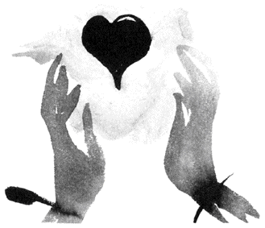
やさしさ
――上辺に惑わされていませんか？
以前、とある女性誌で「恋人、もしくは夫（妻）にしたい理想のタイプは？」というアンケートをとった。すると男も女も、ダントツ一位が「やさしい人」。二位以下を大きく引き離してのトップだった。女性は、一昔前のバブル時代に 流 行 った「三高願望」を葬り、男性も「家庭的な女性」などというない物ねだりをやめた。その結果が「やさしさ」という無難な着地点だったように思う。
ところが、無難な理想にもかかわらず、男も女も恋人捜しに悪戦苦闘......。晩婚化は加速の一途で、たとえば東京都に暮らす三十～三十四歳を調べれば、女性三一・一％、男性四九・二％（国勢調査）が独身という現実なのだ。無難な理想「やさしさ」を掲げているにもかかわらず、なぜ男も女も相手選びが難航しているのだろう。
そんな疑問に、はたと思い出したのが、ある女性を取材したときのことだ。
可奈子さん（二十五歳・仮名）は、一年近く前に、東京郊外の大型スーパーに事務職として転職した。入社当初から、上司や先輩との人間関係にも恵まれ、しかも親友と呼べる心やさしい同僚とも巡り合えた転職成功組だ。
そんな彼女は、環境のいい職場で仕事をして、アフターファイブは同僚で親友でもある由美ちゃん（仮名）と、ファミレスに寄ったり、買い物をしたり、まさに快適なＯＬ生活を楽しんでいた。
ところが、数カ月後に小さな問題がおきた。
「最初、電車通勤するつもりで、交通費を会社に請求してたんです。でも、車のほうが楽だからマイカー通勤してたら、課長にバレて......」
職場が郊外のスーパーだから、駐車場はたくさんある。社員のマイカー通勤は社内的にはＯＫだった。ただ、車で通う場合、電車通勤の交通費に比べ、微々たるガソリン代しか出ない。このことに気づいた可奈子さんは、ほんの出来心で電車代をもらいながら、車で通勤していたのだ。由美ちゃんからも注意されなかったので、まったく罪の意識もなく......。
しかし、これが課長にバレて大目玉を 喰 らってしまった。もちろん可奈子さんは、余分にもらった交通費を全額返したが、信用を失うことになってしまったのだ。
◆ 「○○ ちゃんは、やさしいから」とは言うものの......
その後、可奈子さんは今まで以上に率先して仕事をこなし、信頼の回復に努めたそうだ。
ところが、上司が見直しかけてくれた矢先、またもやポカをやってしまったのだ。
「今度は交通費じゃなく、通信費だったんですよ。会社からかけた国際電話がバレちゃって......」
なんでも、可奈子さんの彼氏は海外に留学中なのだが、ある夜、二人は海をまたいで大ゲンカをした。ケンカの理由は思い出せないほど 些 細 なことだったが、売り言葉に買い言葉で彼女は、彼に別れを宣言してしまったそうだ。
眠れないまま朝を迎えた可奈子さんは、後悔を引きずって出社。親友の由美ちゃんにも仲直りをすすめられ、昼休みを利用して社内から国際電話をかけて彼に謝った。
ところが、彼とは仲直りができたものの、翌月に電話会社から届いた請求書で、この一件が発覚。彼女は、またもや上司から大目玉を喰らうことになってしまったのだ。
一度ならずか、二度までも......。それ以来、彼女の信用は〝 底値で安定〟 しているとか。
取材中、可奈子さんはしきりに頭を 掻 いていたが、本人も反省している通り、もちろん彼女のやったことは、社会人としてルール違反だ。怒られて当然だし、信用を回復するために時間をかけて努力すべきだろう。
が、一方で思った。近くにいた親友の由美ちゃんとやらは、何をしていたのかと。
由美ちゃんは、アフターファイブに可奈子さんの車に乗って、食事や買い物に繰り出していた。国際電話をかけるときにもいっしょだった。
可奈子さんより会社でのキャリアが長い由美ちゃんは、社内の風紀にも詳しかったはず。
車の件も、電話の件も、課長にバレたらどうなるか、気づいていたと思うのだ。
なのに、由美ちゃんは注意をしなかった。
可奈子さんは「由美ちゃんは、やさしいから」と言ったが、親友に苦言を呈さないことが、本当のやさしさなのだろうか？
私は二十代の頃、五年近くつきあっていた男性がいた。その恋は不倫で、不毛の恋愛に終止符を打つときは、かなり泣いた覚えがある。
その彼に、私は別れてから、二度ばかり電話をかけている。
一度目は、仕事で行きづまった夜だ。このとき、彼は親身に相談にのってくれた。
そして二度目は、それから数カ月後のこと。同じ 類 いの相談を私は彼に持ちかけた。やさしい言葉を期待して。ところが彼は......。
「いい加減にしろ。俺を頼るな（ガチャン）」
けんもほろろに電話は切られてしまったのだ。五年もつきあったのに、なんて冷たい男なんだ。私が受話器を握りしめ、怒りまくったのは言うまでもない。
が、今考えると気づくことがある。
二十代の頃、私は何か困ると、人に泣きつくことで問題回避する癖があった。逃げるのだから問題は残ったままだ。そのため私は周期的に同じことでつまずいては泣き言を繰り返した。
彼は、そんな私の欠点を見抜いていた。だから、突き放すことで、気づかせたかった。
そう、今思い返せば、彼の冷たい態度は、やさしさの裏返しだったのだ。
冒頭にも書いたように、シングルたちの理想のタイプは「やさしい人」だ。でも、難しいリクエストではないのに、男も女も恋人捜しに苦戦しているのが現実である。それは、求めているやさしさが由美ちゃんタイプの、「上辺のやさしさ」ではなく、もっと「本物のやさしさ」だからではないだろうか。
たとえ憎まれ役になっても、相手のために厳しい言葉を差し向ける。そんな気骨のある、やさしさが持てたら......。そして、相手の厳しい言葉を、やさしさだと気づける自分であったら......。
本当の友達はもとより、素敵なパートナーに必ず巡り合えると思うのだ。
本音
――ありのままの心で、人づきあいをしませんか？
やってしまった......。
受話器を置いて、私はうなだれた。
電話の相手は知り合いの咲子さんだった。おっとりした彼女の口調は、電話を切る直前にはヒステリックに変わっていたと思う。
女同士がもめた発端は、男問題だった。といっても三角関係のもつれではない。
原因は半年前の合コンにさかのぼる。
大手企業で一般職ＯＬをしている咲子さんは、合コン愛好家だった。そんな彼女はよく「合コンがあったら必ず誘ってね」と、かわいく小首を 傾 げていたものだ。
「普通の人でいいの。肩書きは関係ないわ」
彼女は無難な条件を口にしたが、私はとても誘えなかった。知る限りでも彼女が合コンしてきた相手は、医者に弁護士が中心。とても私の知り合いの中から、彼女が満足する男性を探せるとは思えなかったからだ。
しかし、ひょんなことから男友達の歯医者が話に乗ってきた。それで実現したのが半年前の合コンだったのだ。
歯科医師が集まった合コンの席で、咲子さんは、お気に入りの男性（仮にＡ君）を見つけたようだった。
しばらくして彼女は、すでに彼と何度か連絡を取り合ったと、電話をしてきた。
うきうきと話す彼女に、私は二人の明るい未来を予感したものだ。
ところが三カ月が過ぎた頃だったろうか。今度は幹事役の男友達から連絡が入ったのだ。
聞けば、咲子さんが連日鳴らす電話や、日記みたいなＥメール、そのどれもにＡ君が困り果てているというのだ。
彼女のしつこいアプローチに負け、Ａ君は一度だけ咲子さんと食事をともにした。けれども、以降は「忙しい」の一点張りで逃げ回っているという。
「バレンタインデーには、チョコレートとラルフローレンのマフラーがダブルで病院に送られてきたって、ヤツ頭抱えてたぜ」
男友達は 呆 れたように言った。咲子さんには申し訳ない表現だが、その口振りはまるで彼女をストーカーだといわんばかりだった。
そう、男友達の話は、咲子さん情報とあまりにも食い違っていたのだ。
大人の恋愛である。本来なら私が口を挟むのは野暮というもの。だが、このままでは咲子さんが傷ついてしまう。そう考えた私は、それとなく彼女に探りを入れてみた。
「彼が忙しくて会えないけど、メールで連絡は取り合ってるし、相性もいいと思うのよ」
近況を尋ねると、彼女は彼との「今後」を期待している口振りだった。彼が言い訳した「忙しい」の意味を真に受けて、ひたすらデートする日を待っていたのだ。
いずれ彼女は彼の本心を知ることになるだろう。時間がたてばたつほど、彼女の傷は深くなるに違いない。どうにかしなくては......。
「ねえ、新しい出会いも探そうよ」
私は本音に 鍵 をかけて、そう話を向けてみた。核心を突かず、 脇 から徐々に軌道修正しようと思ってのことだ。
彼女とは数年前にスポーツクラブで知り合ってからのつきあいだが、自宅の場所も知らないし、共通の友達も少ない。
そんな私たちは「知り合い以上、友達未満」の関係である。もし彼女が、深いつきあいの友達だったら、直球で事の 顛 末 を告げられただろうが、彼女は友達未満......。だからこそ遠慮が先立ちオブラートに包んだ言い方を選ぶしかなかったのだ。
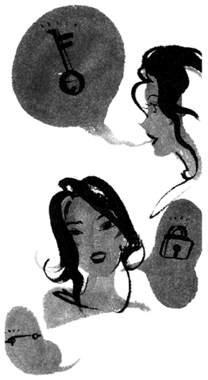
そして迎えたのが、冒頭の電話だった。
バーゲンや映画の話を導入に、やがて彼女が矛先を向けたのは、Ａ君とのこと。男友達や私も含め四人で食事でも、と提案してきた。
「ねっ、久しぶりに会いましょうよ」
彼女は弾んだ声を出した。私は困った。
たとえ四人で会っても、誰もが気まずい思いをするのは目に見えている。
「最近忙しくて、予定が立たないんだ」
直球が投げられない私は、変化球で答えを避けた。しかし彼女は「一日くらい時間、作れるでしょう」と、 執 拗 に食い下がった。
「それより新しい出会い、探そうよ。また誰か紹介するからさ」
私は再びかわした。それでも彼女は食い下がった。私はまたはぐらかした。
彼女がキレたのは、この直後だった。
「どうして？ もしかしてＡ君に気があるの？」
声を 尖 らすと、彼女はあらぬ疑いまで掛けてきた。私は必死で言い訳したが、彼女には伝わらなかった。後味の悪さだけが残った。
なぜ、こんなに話がこじれてしまったのだ。私はうなだれながら考えた。
誤解を生んだ理由は、私が事実を口にしなかったことだ。もっと話をたぐれば、Ａ君が迷惑なのに「忙しい」と言ったことや、私と咲子さんが上辺のつきあいだったこと、そのすべてが引き金になっていたように思う。
そう、振り返れば関わった誰もが、オブラートに包んで相手に言葉を差し向けた。これが、こんがらがった理由なのだ。
パソコンのインターネットでチャットを利用する友人によれば、見知らぬ同士が話をするチャットには、本音が 溢 れているという。
友人は「互いにハンドルネームだから、自分を知られていない安心感が、彼らに本音を語らせる」と言っていたが、この話を聞いて私は思った。
チャットと違い日常生活では、自分の存在がガラス張りになる。自分の発言に責任が生じるわけだ。だからこそ、本音をオブラートに包み、無難な言葉を選んでしまうのだと。だが、それは相手への思いやりなのだろうか？
私には、人を傷つけないためではなく、自分を守るための防衛策だと思えてならない。
生の人間関係ではハンドルネームは使えない。フルネームでも心の中を正直に伝える勇気を持ちたいものだ。これは、一人友達を失いかけている私の課題でもある。
これまで数多くのシングル女性を取材してきた。
彼女たちは、シングルの今を「悪くない」「まずまず快適」と語りつつも、反面で漠然と将来の不安を抱えていた。
不安のキーワードになるのは、やはり結婚だった。ある女性は、「いつまでも宿題が終わらない感じ」、と 譬 えたが、言い当てているように思う。
世の中、晩婚化が進んでいるが、日本の社会は結婚していたほうがずっと便利にできている。私たちが結婚を「宿題」と置き換えてしまうのは、そのせいかもしれない。
「シングルは悪くはないが、宿題が気にかかる」
昔話で恐縮だが、子供の頃、私はこれと同じ気持ちになったことがある。そのものずばり、学校の宿題が気になって、夏休みが楽しめなかったのだ。
序盤では「まだまだ先は長い」と余裕をかますものの、中盤......八月に入ると宿題の存在が気にかかり出す。気になるならさっさと片づければいいのに、やりたくないから放っておく。でも、忘れたフリをしても気になるから、外出も控え目にする。「宿題」に縛られて、楽しいはずの夏休みを憂うつに過ごしていたわけだ。
しかし、ある夏はちょっと違った。行動的な友達と知り合ったことが縁で、海へのキャンプ、友達の家の山荘、常磐ハワイアンセンター（当時のネーミング）など、毎日あっちこっちに飛び回っていた。当然、宿題は終わっていない。忙しいから終わっていないことすら忘れている。ところが、夏の終わりに意外な結末を迎えているのだ。夏休み最後の日、泣きながら徹夜で宿題をやった？ いや、逆である。活発に動いたことで、絵日記のネタには事欠かない。キャンプで出会ったお兄さんに面白い本を教えてもらって読書感想文もクリア。山荘から見た雄大な景色は絵画のモチーフになった。と、宿題のことなど考えていなかったのに、結果として宿題が終わっていたのだ。
もしかして、結婚にも同じことが言えないだろうか。
シングルの今を「宿題が終わらない」とブルーな気分で過ごすより、もし、一人だからこそ楽しめる時間と捉えられたら......。毎日はぐんと活気づき、宿題のことも意識しなくなるだろう。そして何より、自分が充実できる時間を紡ぐことで、ふと気づいたとき、いつのまにか宿題が終わっているように思うのだ。
仕事、趣味、恋愛、興味のある扉はどんどん開けていきたい。あきらめることは何ひとつない。だって私たちはシングル。夏休みは、たっぷりあるのだから。
最後になりましたが、本書を出版するにあたり『ＰＨＰスペシャル』編集部の大谷泰志さん、田中絢子さん、ＰＨＰ文庫出版部の瀬間芳恵さんにご協力をいただきました。この場をお借りして、お礼を申し上げます。
二〇〇一年二月
中山み登り
本書は、『ＰＨＰスペシャル』一九九八年十月号～二〇〇〇年十二月号に連載された「女が20 代で後悔しない生き方」に、左記の著作を加えたものである。
「無理して作る縁と本物の縁」（『ＰＨＰ増刊号』一九九七年二月号）
「キレイに個性は欠かせない。」（『ＰＨＰ増刊号』一九九八年五月号）
「平均値を気にしたとき孤独は急に襲ってくる」（『ＰＨＰ』一九九八年八月号）
中山み登り （なかやま みどり）
エッセイスト。１９６３年東京生まれ。
大妻女子短期大学卒業後、日産ミス・フェアレディとなる。ＯＬ、フリーアナウンサーを経て執筆活動を開始。独身女性の悩み、迷い、生きていく真実の姿を丹念に取材したルポルタージュ・エッセイは、女性読者から圧倒的な支持を得ている。
著書に『シングル体質の女たち』『大人家族』『最後に笑う女たち』『恋愛難民』『私が会社を辞めた理由』（以上、光文社）、『コンパニオンお嬢様物語』（講談社）がある。
「あきらめない女」になろう
自分を磨いて幸せをつかむ30 章
著 者‥ 中山み登り
© Midori Nakayama
この電子書籍は『「あきらめない女」になろう 自分を磨いて幸せをつかむ30 章』二〇〇一年三月十五日第一版第一刷発行を底本としています。
電子書籍版
発行者‥ 安藤卓
発行所‥ 株式会社ＰＨＰ研究所
東京都千代田区一番町二一番地
〒102-8331
製作日‥ 二〇一三年二月四日
本書の無断複写（コピー）は著作権法上での例外を除き、禁じられています。